← 回股市觀察
盤中觀察 每日盤中觀察
2026/11/10 12:31 即時快照 · 當日盤中成交金額前 50 檔（上市 35＋上櫃 15）· 公開資料整理
→ 看當日逐檔技術線型分析（全檔） 歷次逐檔分析
42,536.16
加權指數 +874.46 點（+2.10%）
這是盤中快照，不是收盤結果。資料時間 2026-11-10 12:31:01（TWSE MIS 即時行情，上市／上櫃皆 delay=0）。
13:30 收盤（含最後一盤集合競價）會再變動；量能是以「已過交易時間比例」推估（尾盤大量時會低估）；
技術面標籤是把盤中現價代入原本以收盤價設計的規則（日線歷史只到前一交易日 9/14）。
統計範圍：候選池＝20261109 與 20261106 收盤成交值前段（上市 250／上櫃 130）取聯集，共 415 檔；再以今日盤中累計成交金額排序取
上市前 35＋上櫃前 15。漲跌家數是候選池內的數字，不是全市場（即時全市場家數證交所沒有開放端點）。
本頁為公開資料的整理與觀察，不構成投資建議，不報牌、不預測、不下買賣決策。
時程紀錄（本日盤中分析）▾ 點擊展開▴ 點擊收合
| 階段 | 時間 |
|---|
| 任務開始 | 由排程自動觸發（週一～週五 12:30） |
| 分析腳本執行 | 12:30:26 → 12:31:01（35.5 秒） |
| 資料快照時間 | 2026-11-10 12:31:01（行情時間戳 12:30:56） |
| 本頁產出 | 見頁尾版本時間 |
逐階段 log：
| 12:30:26 | START 盤中分析開始 |
| 12:30:26 | ① 抓即時指數（tse_t00 / otc_o00） |
| 12:30:26 | ② 建立候選池（20261109 與 20261106 成交值前段，上市＋上櫃） |
| 12:30:27 | 候選池共 415 檔 |
| 12:30:27 | ③ 抓即時候選池行情 |
| 12:31:01 | 取得即時報價 415 檔 |
| 12:31:01 | 候選池漲跌：漲 302／跌 98／平盤 15（快照時間 12:30:56） |
| 12:31:01 | ④ 選出 70 檔（上市 50＋上櫃 20），門檻 17.02 億 |
| 12:31:01 | ⑤ 抓日線歷史並算技術面 |
| 12:31:01 | ⑥ 產出（70 檔） |
K 線圖怎麼看：每一檔都附 K 線圖 —— 黃圈是轉折低點、粉圈是轉折高點（
虛線圈代表還沒確認的轉折）、藍線是月線（20 日均線）；頸線取最近兩個轉折低點之間的最高轉折高點，
突破頸線才會標示。
圖上另有兩條水平虛線、左側標數值：高點頸線（紅，最近兩個轉折低點之間的最高轉折高點）與低點頸線（綠，最近兩個轉折高點之間的最低轉折低點）；樣本不足就不畫。
紅色 K 棒＝收盤高於開盤、綠色＝收盤低於開盤。
大盤趨勢快篩（加權指數）（盤中近似） 資料日 2026/11/09・來源：證交所公開資料
主狀態：跌破頸線（M 頭成立）
前一交易日對照（11/06）：跌破頸線（M 頭成立）（量比 20 1.34） → 今日跌破頸線（M 頭成立）（量比 20 0.89）
指標、數值、判定（點開看 12 項明細：均線位置／排列、月線方向、頸線、轉折結構、位階、量價…）
加權指數11/9 收盤漲 1,960.06 點（+4.94%），收 41,661.70、跌破月線 45,726.72；月線還在下彎，MA5 這條短均還沒收復，離高點頸線 47,372.65 還差 12.06%。
- 均線位置：4 條均線站上 0 條；沒站上的是 MA5 41,838.90（收盤比它低 0.42%）、MA10 43,882.66（收盤比它低 5.06%）、MA20 45,726.72（收盤比它低 8.89%）、MA60 46,360.77（收盤比它低 10.14%）
- 月線方向：月線 MA20 現在 45,726.72，比 5 個交易日前低 1,848.78 點 → 下彎
- 量能：集中市場成交 8,770.3 億，比 5 日均量少很多（0.82 倍）、比 20 日均量少一些（0.89 倍）
- 關鍵價位：高點頸線 47,372.65，還差 12.06%；低點頸線 44,639.15已跌破
- 大小型股：加權 +4.94%、櫃買 +5.90%，兩邊同向
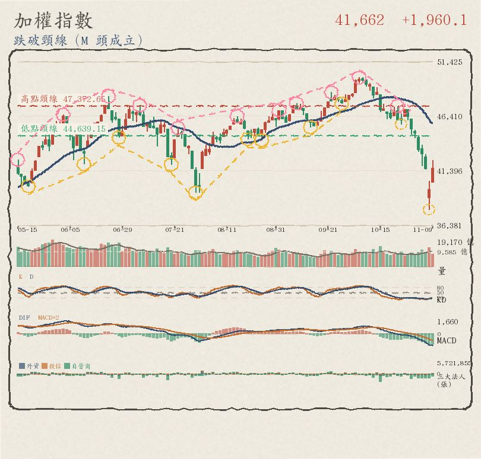
圖說：加權指數日 K（與個股圖相同標記）：黃圈＝轉折低點、粉圈＝轉折高點、虛線小圈＝還沒確認的轉折、藍線＝月線 MA20、水平虛線＝高點／低點頸線。最後一根是資料日當天。
本區塊為公開資料的技術面觀察，不構成投資建議，
不報牌、不預測、不下買賣決策。成交金額為集中市場總成交金額（含 ETF／權證），
與頁首摘要的「上市個股成交金額」口徑不同。標籤是統計，不是評分、也不是推薦。
上市 vs 上櫃（同期快篩）
加權 +4.94% vs 櫃買 +5.90%（同向） → 同向
（兩個市場分開寫，不合併成一個數字；櫃買為 TPEX 公開資料）
櫃買歷史：TPEX 逐日回補 130 根；來源：櫃買中心 www/zh-tw/indexInfo/sectinx（逐日，官方；OpenAPI tpex_index 只回當月）
（TPEX OpenAPI 只回當月，故逐日回補；歷史不足就不算該條均線並標「資料不足」，不用錯數字）
近 20 個交易日大盤狀態回溯（最新在上）（點開看逐日主狀態／量比／量價象限）
用同一支程式回算最近 20 個交易日（主狀態 S1~S8 與量比 20 皆為當日收盤當時的判定，
不是事後調整）；量比 20 未公布的日子寫「—」。
好條件最多的（前 10）
不好條件最多的（前 10）
好條件（7 項）：站上月線、月線向上、底底高、頭頭高、突破頸線、攻擊量（量增＋上漲）、守住今日高檔（距今日高點 1% 內）。
不好條件（7 項）：跌破前低、今日下跌、相對大盤弱、在月線之下、貼近今日低點（1% 內）、跌破昨日低點、月線下彎。
兩邊都是同一組日線資料＋盤中即時價算出來的「符合項目數」，只是把方向相反的條件分開數；
條件數不是評分或推薦，不構成投資建議。
盤中爆量（估量比 ≥ 1.5）（33 上市 22／上櫃 11）
跌破前低（線型轉弱）（60 上市 44／上櫃 16）
今日疲弱（跌幅前 10）（10 上市 5／上櫃 5）
逐檔（70 檔，依盤中成交金額排序）
聯發科 2454 上市
3835 +110.0（+2.95%）
底部墊高、未過前高 盤中成交值 609.38 億・全榜第 1 名（上市第 1 名）・相對大盤 +0.85
好條件 2/7：底底高、攻擊量（量增＋上漲）
不好條件 3/7：跌破前低、在月線之下、月線下彎
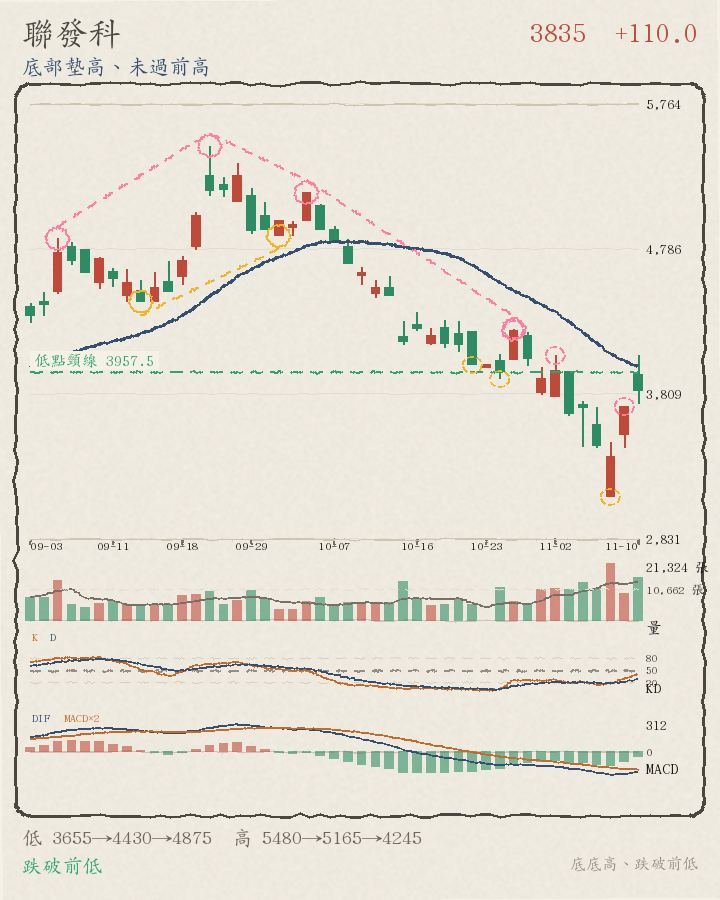
12:31 盤中 3835（+2.95%），比加權指數強 0.85 個百分點、跌破月線 4032.25，底部還在墊高（但高點沒同步創高）。
- 月線位置：現價 3835 在月線 4032.25 之下（-4.9%）；5 日線 3593 也在月線之下（短均在下）；月線向下
- 量能：以已過交易時間推估，今天成交量約是 20 日均量的 2.15 倍（爆量），比 20 日均量大不少；上漲又量增，量價配合
- 關鍵價位：前一交易日高點 3725（高於 3.0%）；今天盤中高點 4065（低於 5.7%）；今天盤中低點 3745（高於 2.4%）
- 轉折結構：低點 3655、4430、4875 墊高（底底高），但高點 5480、5165、4245 沒有同步創高；還沒確認的轉折低點 10-27 3910、11-06 3115；還沒確認的轉折高點 11-02 4070、11-09 3725（圖上虛線小圈）
台積電 2330 上市
2260 +25.0（+1.12%）
區間或轉弱 盤中成交值 527.24 億・全榜第 2 名（上市第 2 名）・相對大盤 -0.98
好條件 1/7：守住今日高檔（距今日高點 1% 內）
不好條件 4/7：跌破前低、相對大盤弱、在月線之下、月線下彎
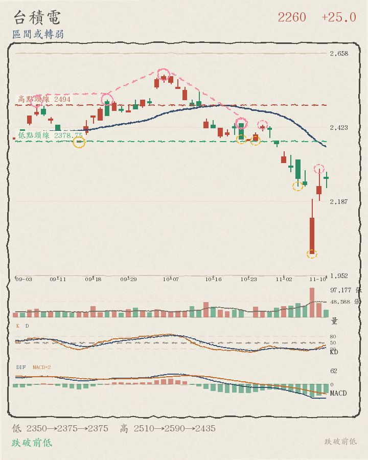
12:31 盤中 2260（+1.12%），比加權指數弱 0.98 個百分點、跌破月線 2375，離高點頸線 2494 還差 9.4%，轉折還沒走出明顯方向。
- 月線位置：現價 2260 在月線 2375 之下（-4.8%）；5 日線 2233 也在月線之下（短均在下）；月線向下
- 量能：以已過交易時間推估，今天成交量約是 20 日均量的 0.92 倍（量平），比 20 日均量少一些
- 關鍵價位：已跌破前一個轉折低點；高點頸線 2494 還在現價上方 9.4%；前一交易日高點 2290（低於 1.3%）；今天盤中高點 2280（低於 0.9%）；今天盤中低點 2230（高於 1.3%）
- 轉折結構：低點 2350、2375、2375 與高點 2510、2590、2435 都沒有明顯遞增，屬於區間震盪或轉弱；還沒確認的轉折低點 11-04 2235、11-06 2020；還沒確認的轉折高點 10-28 2430、11-09 2290（圖上虛線小圈）
南亞 1303 上市
289 +26.0（+9.89%）
區間或轉弱 盤中成交值 277.6 億・全榜第 3 名（上市第 3 名）・相對大盤 +7.79
好條件 1/7：攻擊量（量增＋上漲）
不好條件 3/7：跌破前低、在月線之下、月線下彎
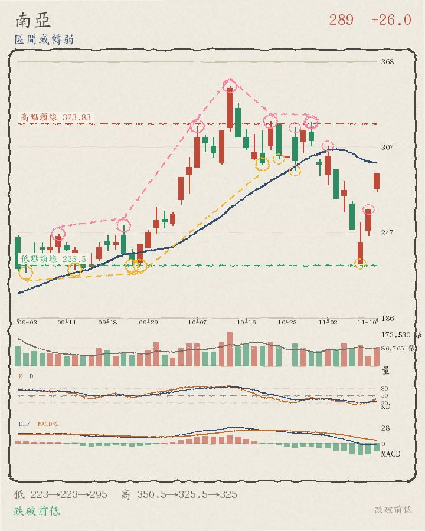
12:31 盤中 289（+9.89%），比加權指數強 7.79 個百分點、跌破月線 296.95，離高點頸線 323.83 還差 10.8%，轉折還沒走出明顯方向。
- 月線位置：現價 289 在月線 296.95 之下（-2.7%）；5 日線 259.8 也在月線之下（短均在下）；月線向下
- 量能：以已過交易時間推估，今天成交量約是 20 日均量的 1.22 倍（量增），比 20 日均量大不少；上漲又量增，量價配合
- 關鍵價位：已跌破前一個轉折低點；高點頸線 323.83 還在現價上方 10.8%；前一交易日高點 263（高於 9.9%）；今天盤中高點 289（高於 0.0%）；今天盤中低點 275.5（高於 4.9%）
- 轉折結構：低點 223、223、295 與高點 350.5、325.5、325 都沒有明顯遞增，屬於區間震盪或轉弱；還沒確認的轉折低點 10-27 290.5、11-06 224.5；還沒確認的轉折高點 11-02 308、11-09 263（圖上虛線小圈）
創意 3443 上市
7235 +530.0（+7.90%）
區間或轉弱 盤中成交值 255.11 億・全榜第 4 名（上市第 4 名）・相對大盤 +5.80
好條件 1/7：攻擊量（量增＋上漲）
不好條件 2/7：在月線之下、月線下彎
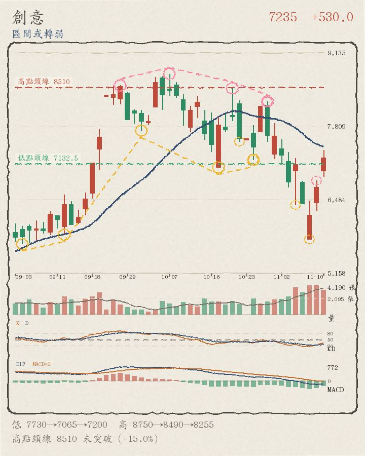
12:31 盤中 7235（+7.90%），比加權指數強 5.80 個百分點、跌破月線 7486，離高點頸線 8510 還差 15.0%，轉折還沒走出明顯方向。
- 月線位置：現價 7235 在月線 7486 之下（-3.4%）；5 日線 6645 也在月線之下（短均在下）；月線向下
- 量能：以已過交易時間推估，今天成交量約是 20 日均量的 2.18 倍（爆量），比 20 日均量大不少；上漲又量增，量價配合
- 關鍵價位：高點頸線 8510 還沒突破，差 15.0%；前一交易日高點 6825（高於 6.0%）；今天盤中高點 7375（低於 1.9%）；今天盤中低點 6900（高於 4.9%）
- 轉折結構：低點 7730、7065、7200 與高點 8750、8490、8255 都沒有明顯遞增，屬於區間震盪或轉弱；還沒確認的轉折低點 11-04 6390、11-06 5765；還沒確認的轉折高點 10-29 8255、11-09 6825（圖上虛線小圈）
台光電 2383 上市
4300 +230.0（+5.65%）
底部墊高、未過前高 盤中成交值 222.18 億・全榜第 5 名（上市第 5 名）・相對大盤 +3.55
好條件 2/7：底底高、攻擊量（量增＋上漲）
不好條件 3/7：跌破前低、在月線之下、月線下彎
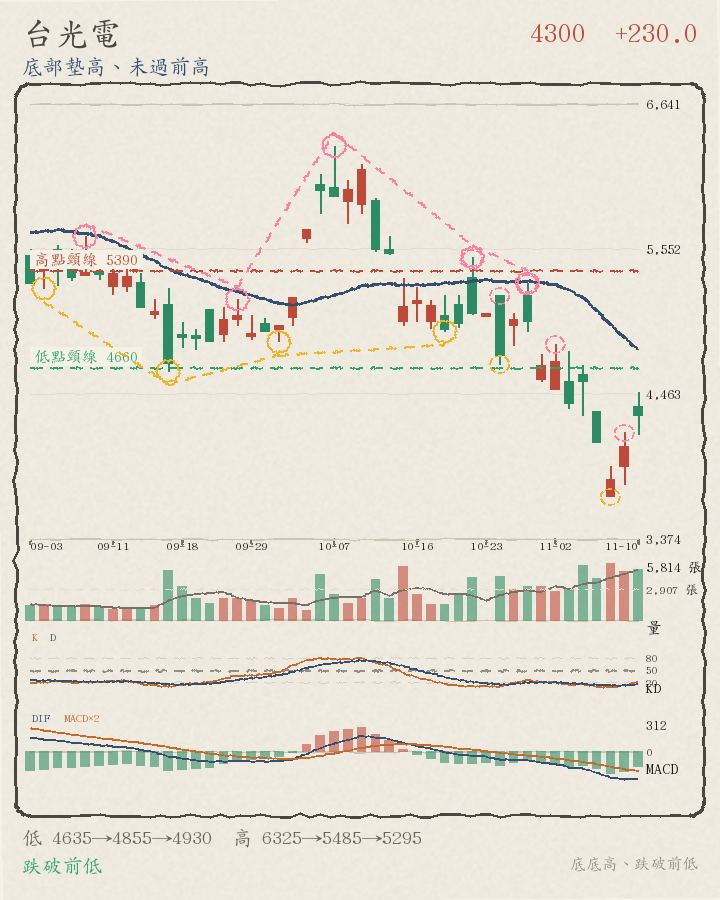
12:31 盤中 4300（+5.65%），比加權指數強 3.55 個百分點、跌破月線 4890.25，離高點頸線 5390 還差 20.2%，底部還在墊高（但高點沒同步創高）。
- 月線位置：現價 4300 在月線 4890.25 之下（-12.1%）；5 日線 4188 也在月線之下（短均在下）；月線向下
- 量能：以已過交易時間推估，今天成交量約是 20 日均量的 1.95 倍（爆量），比 20 日均量大不少；上漲又量增，量價配合
- 關鍵價位：已跌破前一個轉折低點；高點頸線 5390 還在現價上方 20.2%；前一交易日高點 4170（高於 3.1%）；今天盤中高點 4475（低於 3.9%）；今天盤中低點 4160（高於 3.4%）
- 轉折結構：低點 4635、4855、4930 墊高（底底高），但高點 6325、5485、5295 沒有同步創高；還沒確認的轉折低點 10-27 4685、11-06 3690；還沒確認的轉折高點 11-02 4835、11-09 4170（圖上虛線小圈）
國巨* 2327 上市
420 +9.0（+2.19%）
區間或轉弱 盤中成交值 209.12 億・全榜第 6 名（上市第 6 名）・相對大盤 +0.09
好條件 1/7：攻擊量（量增＋上漲）
不好條件 3/7：跌破前低、在月線之下、月線下彎
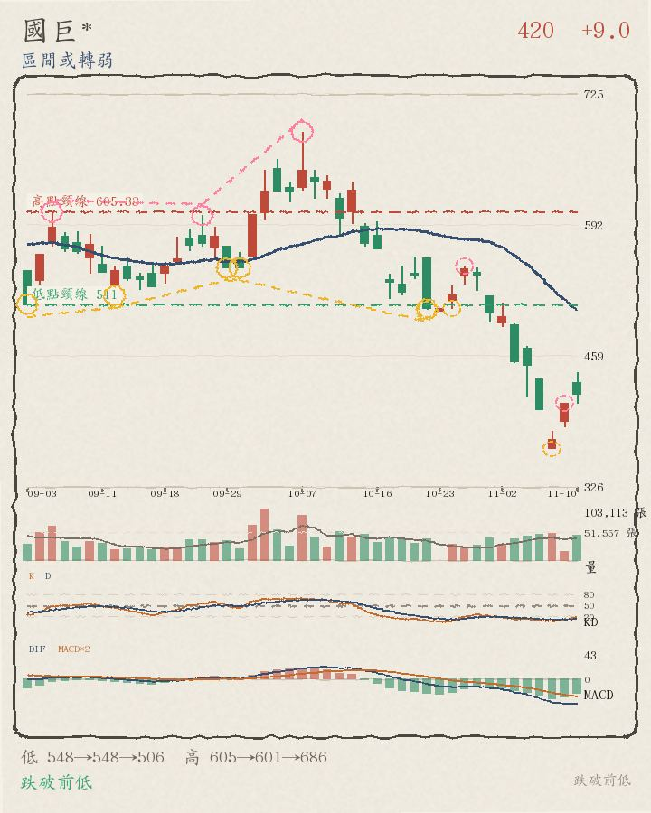
12:31 盤中 420（+2.19%），比加權指數強 0.09 個百分點、跌破月線 515.9，離高點頸線 605.33 還差 30.6%，轉折還沒走出明顯方向。
- 月線位置：現價 420 在月線 515.9 之下（-18.6%）；5 日線 418.3 也在月線之下（短均在下）；月線向下
- 量能：以已過交易時間推估，今天成交量約是 20 日均量的 1.55 倍（爆量），比 20 日均量大不少；上漲又量增，量價配合
- 關鍵價位：已跌破前一個轉折低點；高點頸線 605.33 還在現價上方 30.6%；前一交易日高點 411（高於 2.2%）；今天盤中高點 442（低於 5.0%）；今天盤中低點 410.5（高於 2.3%）
- 轉折結構：低點 548、548、506 與高點 605、601、686 都沒有明顯遞增，屬於區間震盪或轉弱；還沒確認的轉折低點 10-27 507、11-06 364.5；還沒確認的轉折高點 10-28 550、11-09 411（圖上虛線小圈）
台達電 2308 上市
1275 +115.0（+9.91%）
高點墊高、底部不穩 盤中成交值 190.04 億・全榜第 7 名（上市第 7 名）・相對大盤 +7.81
好條件 2/7：頭頭高、攻擊量（量增＋上漲）
不好條件 3/7：跌破前低、在月線之下、月線下彎
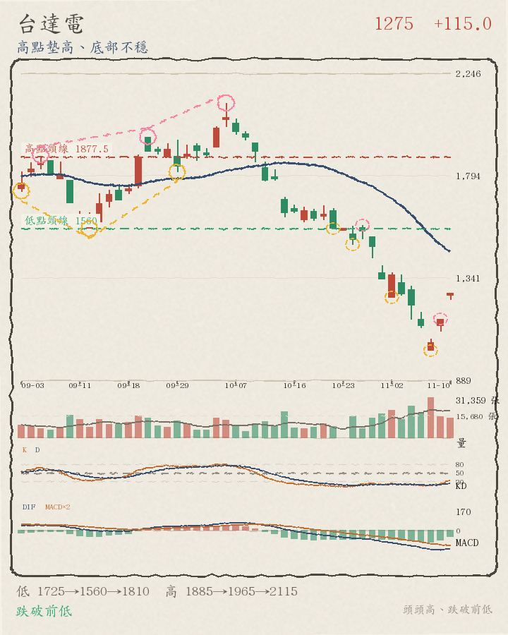
12:31 盤中 1275（+9.91%），比加權指數強 7.81 個百分點、跌破月線 1489，離高點頸線 1877.5 還差 32.1%，高點還在墊高（但底部沒同步墊高）。
- 月線位置：現價 1275 在月線 1489 之下（-14.4%）；5 日線 1167 也在月線之下（短均在下）；月線向下
- 量能：以已過交易時間推估，今天成交量約是 20 日均量的 1.37 倍（量增），比 20 日均量大不少；上漲又量增，量價配合
- 關鍵價位：已跌破前一個轉折低點；高點頸線 1877.5 還在現價上方 32.1%；前一交易日高點 1160（高於 9.9%）；今天盤中高點 1275（高於 0.0%）；今天盤中低點 1245（高於 2.4%）
- 轉折結構：高點 1885、1965、2115 墊高（頭頭高），但低點 1725、1560、1810 沒有同步墊高；還沒確認的轉折低點 11-02 1255、11-06 1020；還沒確認的轉折高點 10-28 1575、11-09 1160（圖上虛線小圈）
南亞科 2408 上市
378 +8.0（+2.16%）
區間或轉弱 盤中成交值 187.76 億・全榜第 8 名（上市第 8 名）・相對大盤 +0.06
好條件 1/7：攻擊量（量增＋上漲）
不好條件 3/7：跌破前低、在月線之下、月線下彎
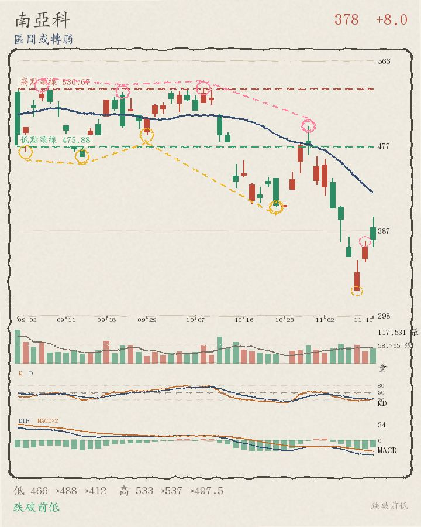
12:31 盤中 378（+2.16%），比加權指數強 0.06 個百分點、跌破月線 434.75，離高點頸線 536.67 還差 29.6%，轉折還沒走出明顯方向。
- 月線位置：現價 378 在月線 434.75 之下（-13.1%）；5 日線 376.8 也在月線之下（短均在下）；月線向下
- 量能：以已過交易時間推估，今天成交量約是 20 日均量的 1.27 倍（量增），比 20 日均量大不少；上漲又量增，量價配合
- 關鍵價位：已跌破前一個轉折低點；高點頸線 536.67 還在現價上方 29.6%；前一交易日高點 376（高於 0.5%）；今天盤中高點 402（低於 6.0%）；今天盤中低點 370.5（高於 2.0%）
- 轉折結構：低點 465.5、488、412 與高點 533、537、497.5 都沒有明顯遞增，屬於區間震盪或轉弱；還沒確認的轉折低點 10-22 412、11-06 324；還沒確認的轉折高點 10-29 497.5、11-09 376（圖上虛線小圈）
欣興 3037 上市
827 +70.0（+9.25%）
底部墊高、未過前高 盤中成交值 186.3 億・全榜第 9 名（上市第 9 名）・相對大盤 +7.15
好條件 3/7：底底高、攻擊量（量增＋上漲）、守住今日高檔（距今日高點 1% 內）
不好條件 3/7：跌破前低、在月線之下、月線下彎
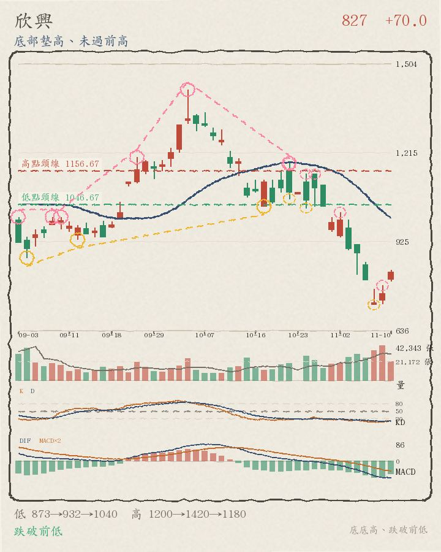
12:31 盤中 827（+9.25%），比加權指數強 7.15 個百分點、跌破月線 1024.5，離高點頸線 1156.67 還差 28.5%，底部還在墊高（但高點沒同步創高）。
- 月線位置：現價 827 在月線 1024.5 之下（-19.3%）；5 日線 814.8 也在月線之下（短均在下）；月線向下
- 量能：以已過交易時間推估，今天成交量約是 20 日均量的 1.42 倍（量增），比 20 日均量大不少；上漲又量增，量價配合
- 關鍵價位：已跌破前一個轉折低點；高點頸線 1156.67 還在現價上方 28.5%；前一交易日高點 782（高於 5.8%）；今天盤中高點 832（低於 0.6%）；今天盤中低點 797（高於 3.8%）
- 轉折結構：低點 873、932、1040 墊高（底底高），但高點 1200、1420、1180 沒有同步創高；還沒確認的轉折低點 10-27 1035、11-06 720；還沒確認的轉折高點 11-02 1020、11-09 782（圖上虛線小圈）
富喬 1815 上櫃
130 +1.0（+0.78%）
底部墊高、未過前高 盤中成交值 183.66 億・全榜第 10 名（上櫃第 1 名）・相對大盤 -1.32
好條件 3/7：底底高、突破頸線、攻擊量（量增＋上漲）
不好條件 3/7：相對大盤弱、在月線之下、月線下彎
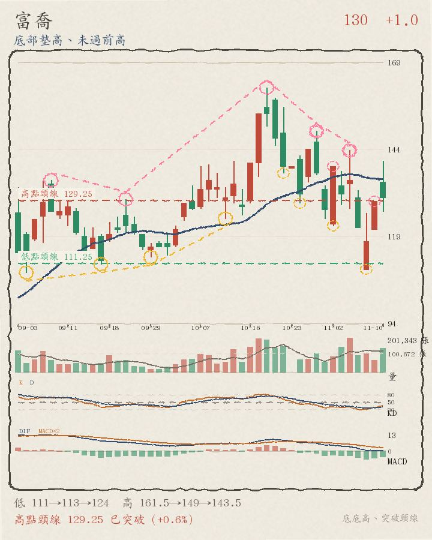
12:31 盤中 130（+0.78%），比加權指數弱 1.32 個百分點、跌破月線 135.45，已突破高點頸線 129.25，底部還在墊高（但高點沒同步創高）。
- 月線位置：現價 130 在月線 135.45 之下（-4.0%）；5 日線 126.8 也在月線之下（短均在下）；月線向下
- 量能：以已過交易時間推估，今天成交量約是 20 日均量的 1.58 倍（爆量），比 20 日均量大不少；上漲又量增，量價配合
- 關鍵價位：高點頸線 129.25 已站上；前一交易日高點 129（高於 0.8%）；今天盤中高點 140.5（低於 7.5%）；今天盤中低點 126（高於 3.2%）
- 轉折結構：低點 111、113、124 墊高（底底高），但高點 161.5、149、143.5 沒有同步創高；還沒確認的轉折低點 11-02 122、11-06 109.5；還沒確認的轉折高點 11-04 143.5、11-09 129（圖上虛線小圈）
大立光 3008 上市
5170 +245.0（+4.97%）
區間或轉弱 盤中成交值 174.38 億・全榜第 11 名（上市第 10 名）・相對大盤 +2.87
好條件 2/7：突破頸線、攻擊量（量增＋上漲）
不好條件 3/7：跌破前低、在月線之下、月線下彎
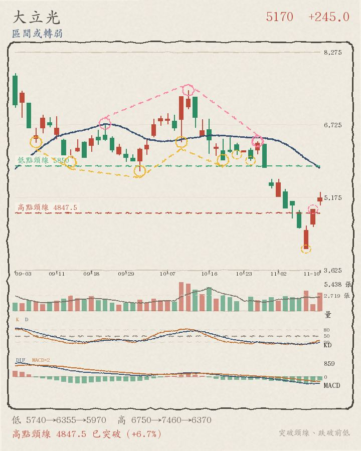
12:31 盤中 5170（+4.97%），比加權指數強 2.87 個百分點、跌破月線 5909，已突破高點頸線 4847.5，轉折還沒走出明顯方向。
- 月線位置：現價 5170 在月線 5909 之下（-12.5%）；5 日線 4777 也在月線之下（短均在下）；月線向下
- 量能：以已過交易時間推估，今天成交量約是 20 日均量的 1.48 倍（量增），比 20 日均量大不少；上漲又量增，量價配合
- 關鍵價位：高點頸線 4847.5 已站上；前一交易日高點 4925（高於 5.0%）；今天盤中高點 5290（低於 2.3%）；今天盤中低點 5010（高於 3.2%）
- 轉折結構：低點 5740、6355、5970 與高點 6750、7460、6370 都沒有明顯遞增，屬於區間震盪或轉弱；還沒確認的轉折低點 10-27 5960、11-06 4075；還沒確認的轉折高點 10-28 6370、11-09 4925（圖上虛線小圈）
日月光投控 3711 上市
602 +41.0（+7.31%）
區間或轉弱 盤中成交值 168.08 億・全榜第 12 名（上市第 11 名）・相對大盤 +5.21
好條件 1/7：攻擊量（量增＋上漲）
不好條件 3/7：跌破前低、在月線之下、月線下彎
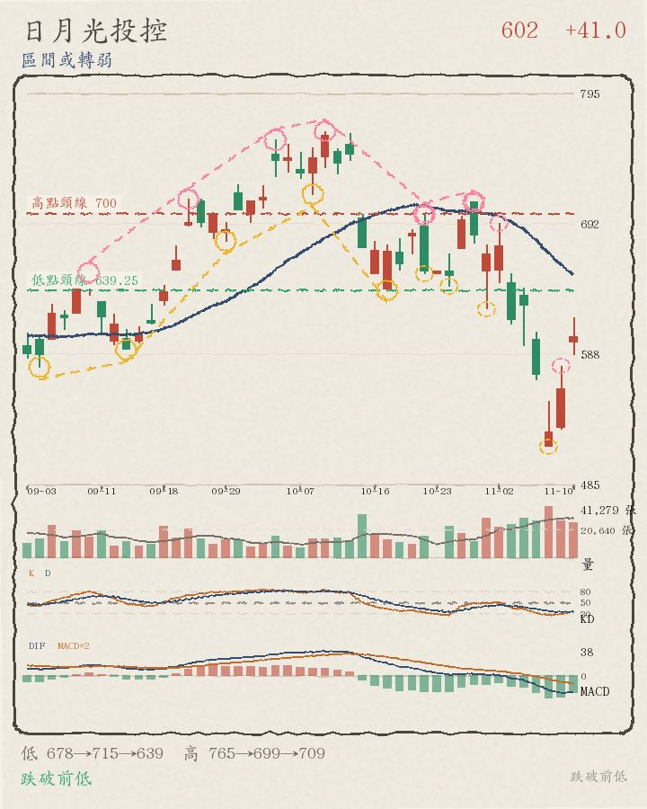
12:31 盤中 602（+7.31%），比加權指數強 5.21 個百分點、跌破月線 659.45，離高點頸線 700 還差 14.0%，轉折還沒走出明顯方向。
- 月線位置：現價 602 在月線 659.45 之下（-8.7%）；5 日線 580.6 也在月線之下（短均在下）；月線向下
- 量能：以已過交易時間推估，今天成交量約是 20 日均量的 1.67 倍（爆量），比 20 日均量大不少；上漲又量增，量價配合
- 關鍵價位：已跌破前一個轉折低點；高點頸線 700 還在現價上方 14.0%；前一交易日高點 579（高於 4.0%）；今天盤中高點 617（低於 2.4%）；今天盤中低點 588（高於 2.4%）
- 轉折結構：低點 678、715、639 與高點 765、699、709 都沒有明顯遞增，屬於區間震盪或轉弱；還沒確認的轉折低點 10-30 624、11-06 515；還沒確認的轉折高點 11-02 692、11-09 579（圖上虛線小圈）
健策 3653 上市
5850 +215.0（+3.82%）
區間或轉弱 盤中成交值 158.24 億・全榜第 13 名（上市第 12 名）・相對大盤 +1.72
好條件 1/7：攻擊量（量增＋上漲）
不好條件 2/7：在月線之下、月線下彎

12:31 盤中 5850（+3.82%），比加權指數強 1.72 個百分點、跌破月線 6351.25，離高點頸線 6625 還差 11.7%，轉折還沒走出明顯方向。
- 月線位置：現價 5850 在月線 6351.25 之下（-7.9%）；5 日線 5830 也在月線之下（短均在下）；月線向下
- 量能：以已過交易時間推估，今天成交量約是 20 日均量的 2.14 倍（爆量），比 20 日均量大不少；上漲又量增，量價配合
- 關鍵價位：高點頸線 6625 還沒突破，差 11.7%；前一交易日高點 5745（高於 1.8%）；今天盤中高點 6190（低於 5.5%）；今天盤中低點 5445（高於 7.4%）
- 轉折結構：低點 5210、6760、5710 與高點 6985、6655、6595 都沒有明顯遞增，屬於區間震盪或轉弱；還沒確認的轉折低點 11-04 5800、11-09 4970；還沒確認的轉折高點 11-04 6595、11-09 5745（圖上虛線小圈）
台燿 6274 上櫃
986 +24.0（+2.49%）
區間或轉弱 盤中成交值 155.95 億・全榜第 14 名（上櫃第 2 名）・相對大盤 +0.39
好條件 1/7：攻擊量（量增＋上漲）
不好條件 3/7：跌破前低、在月線之下、月線下彎
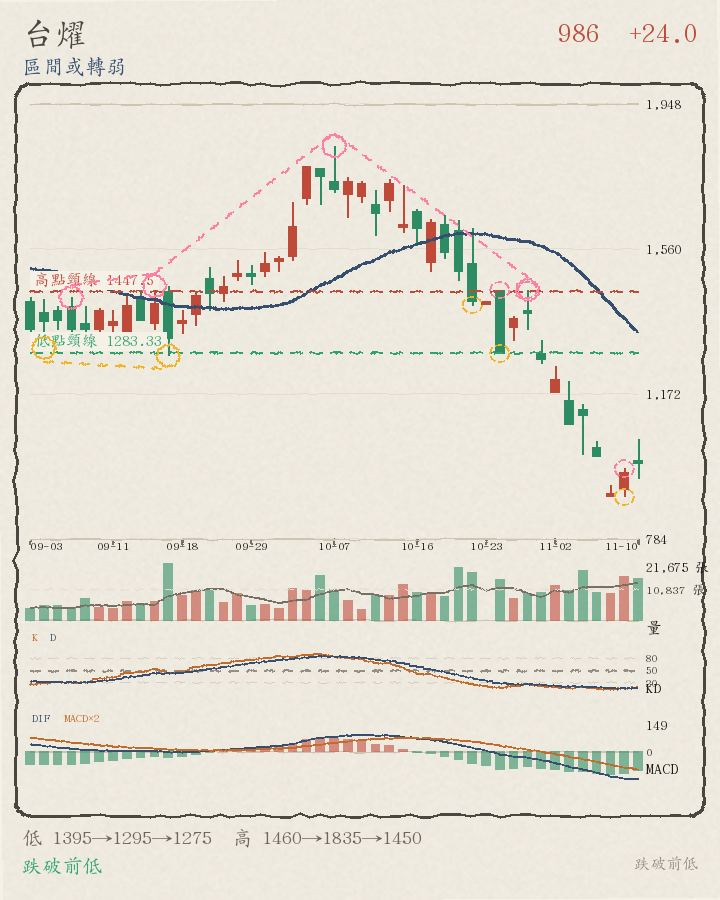
12:31 盤中 986（+2.49%），比加權指數強 0.39 個百分點、跌破月線 1374.15，離高點頸線 1447.5 還差 31.9%，轉折還沒走出明顯方向。
- 月線位置：現價 986 在月線 1374.15 之下（-28.2%）；5 日線 1015.6 也在月線之下（短均在下）；月線向下
- 量能：以已過交易時間推估，今天成交量約是 20 日均量的 1.76 倍（爆量），比 20 日均量大不少；上漲又量增，量價配合
- 關鍵價位：已跌破前一個轉折低點；高點頸線 1447.5 還在現價上方 31.9%；前一交易日高點 972（高於 1.4%）；今天盤中高點 1050（低於 6.1%）；今天盤中低點 947（高於 4.1%）
- 轉折結構：低點 1395、1295、1275 與高點 1460、1835、1450 都沒有明顯遞增，屬於區間震盪或轉弱；還沒確認的轉折低點 10-27 1280、11-09 897；還沒確認的轉折高點 10-29 1450、11-09 972（圖上虛線小圈）
世芯-KY 3661 上市
3420 +310.0（+9.97%）
區間或轉弱 盤中成交值 143.95 億・全榜第 15 名（上市第 13 名）・相對大盤 +7.87
好條件 1/7：攻擊量（量增＋上漲）
不好條件 2/7：在月線之下、月線下彎
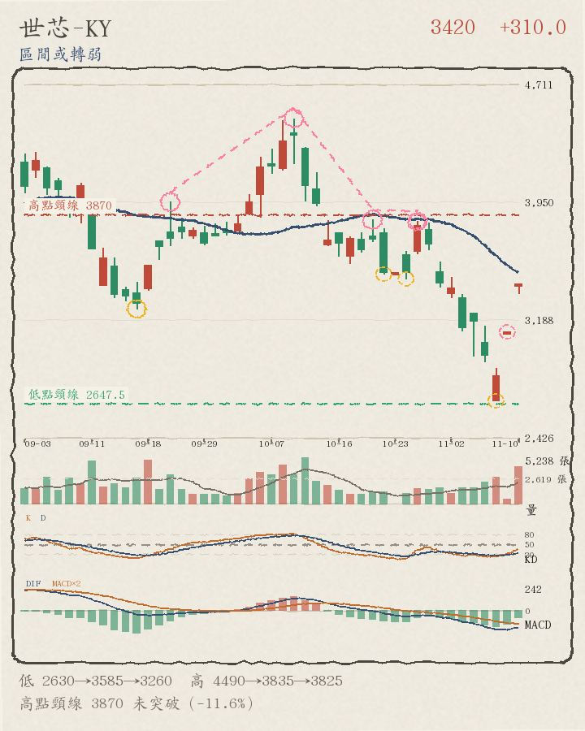
12:31 盤中 3420（+9.97%），比加權指數強 7.87 個百分點、跌破月線 3542.5，離高點頸線 3870 還差 11.6%，轉折還沒走出明顯方向。
- 月線位置：現價 3420 在月線 3542.5 之下（-3.5%）；5 日線 3044 也在月線之下（短均在下）；月線向下
- 量能：以已過交易時間推估，今天成交量約是 20 日均量的 2.55 倍（爆量），比 20 日均量大不少；上漲又量增，量價配合
- 關鍵價位：高點頸線 3870 還沒突破，差 11.6%；前一交易日高點 3110（高於 10.0%）；今天盤中高點 3420（高於 0.0%）；今天盤中低點 3360（高於 1.8%）
- 轉折結構：低點 2630、3585、3260 與高點 4490、3835、3825 都沒有明顯遞增，屬於區間震盪或轉弱；還沒確認的轉折低點 10-27 3455、11-06 2665；還沒確認的轉折高點 10-28 3825、11-09 3110（圖上虛線小圈）
聯電 2303 上市
100 +3.3（+3.41%）
底部墊高、未過前高 盤中成交值 141.76 億・全榜第 16 名（上市第 14 名）・相對大盤 +1.31
好條件 2/7：底底高、攻擊量（量增＋上漲）
不好條件 3/7：跌破前低、在月線之下、月線下彎
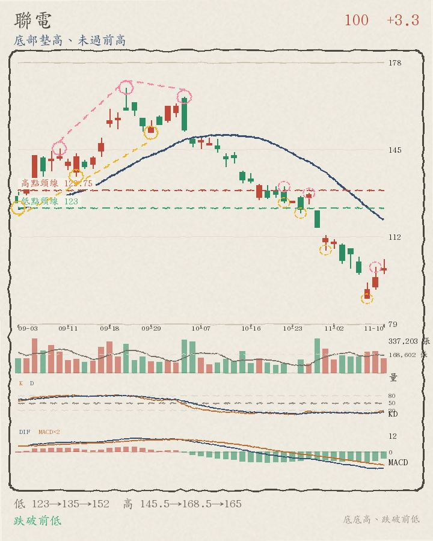
12:31 盤中 100（+3.41%），比加權指數強 1.31 個百分點、跌破月線 120.805，離高點頸線 129.75 還差 22.9%，底部還在墊高（但高點沒同步創高）。
- 月線位置：現價 100 在月線 120.805 之下（-17.2%）；5 日線 99.12 也在月線之下（短均在下）；月線向下
- 量能：以已過交易時間推估，今天成交量約是 20 日均量的 1.27 倍（量增），比 20 日均量大不少；上漲又量增，量價配合
- 關鍵價位：已跌破前一個轉折低點；高點頸線 129.75 還在現價上方 22.9%；前一交易日高點 100.5（低於 0.5%）；今天盤中高點 103.5（低於 3.4%）；今天盤中低點 98（高於 2.0%）
- 轉折結構：低點 123、135、151.5 墊高（底底高），但高點 145.5、168.5、165 沒有同步創高；還沒確認的轉折低點 10-30 107、11-06 88.6；還沒確認的轉折高點 10-28 128.5、11-09 100.5（圖上虛線小圈）
環球晶 6488 上櫃
603 +40.0（+7.10%）
區間或轉弱 盤中成交值 127.34 億・全榜第 17 名（上櫃第 3 名）・相對大盤 +5.00
好條件 1/7：攻擊量（量增＋上漲）
不好條件 3/7：跌破前低、在月線之下、月線下彎
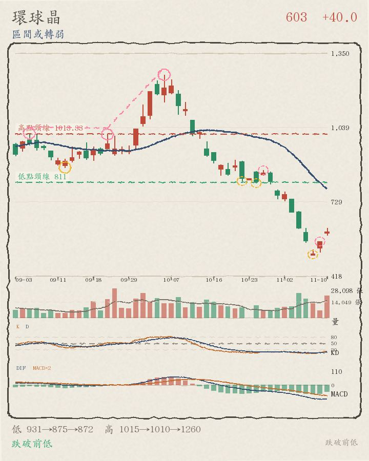
12:31 盤中 603（+7.10%），比加權指數強 5.00 個百分點、跌破月線 808.45，離高點頸線 1013.33 還差 40.5%，轉折還沒走出明顯方向。
- 月線位置：現價 603 在月線 808.45 之下（-25.4%）；5 日線 588.6 也在月線之下（短均在下）；月線向下
- 量能：以已過交易時間推估，今天成交量約是 20 日均量的 2.17 倍（爆量），比 20 日均量大不少；上漲又量增，量價配合
- 關鍵價位：已跌破前一個轉折低點；高點頸線 1013.33 還在現價上方 40.5%；前一交易日高點 563（高於 7.1%）；今天盤中高點 619（低於 2.6%）；今天盤中低點 588（高於 2.6%）
- 轉折結構：低點 931、875、872 與高點 1015、1010、1260 都沒有明顯遞增，屬於區間震盪或轉弱；還沒確認的轉折低點 10-27 807、11-06 508；還沒確認的轉折高點 10-28 860、11-09 563（圖上虛線小圈）
台玻 1802 上市
69.7 +6.2（+9.76%）
底部墊高、未過前高 盤中成交值 111.65 億・全榜第 18 名（上市第 15 名）・相對大盤 +7.66
好條件 6/7：站上月線、月線向上、底底高、突破頸線、攻擊量（量增＋上漲）、守住今日高檔（距今日高點 1% 內）
不好條件 0/7：無
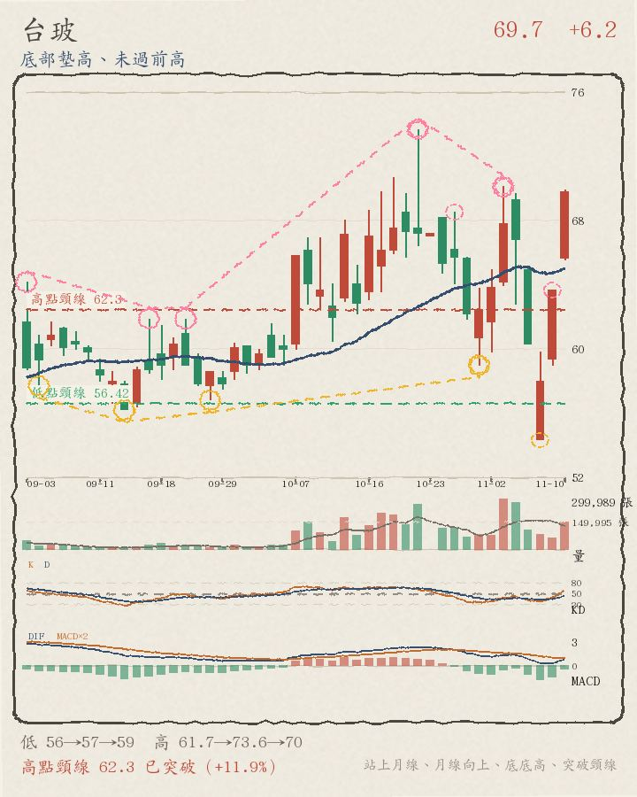
12:31 盤中 69.7（+9.76%），比加權指數強 7.66 個百分點、站上月線 64.565，已突破高點頸線 62.3，底部還在墊高（但高點沒同步創高）。
- 月線位置：現價 69.7 在月線 64.565 之上（+8.0%）；5 日線 63.16 也在月線之下（短均在下）；月線向上
- 量能：以已過交易時間推估，今天成交量約是 20 日均量的 1.39 倍（量增），比 20 日均量大不少；上漲又量增，量價配合
- 關鍵價位：高點頸線 62.3 已站上；前一交易日高點 63.5（高於 9.8%）；今天盤中高點 69.8（低於 0.1%）；今天盤中低點 65.4（高於 6.6%）
- 轉折結構：低點 56、56.6、58.8 墊高（底底高），但高點 61.7、73.6、70 沒有同步創高；還沒確認的轉折低點 10-30 58.8、11-06 54.1；還沒確認的轉折高點 11-03 70、11-09 63.5（圖上虛線小圈）
南電 8046 上市
1000 +67.0（+7.18%）
底部墊高、未過前高 盤中成交值 106.69 億・全榜第 19 名（上市第 16 名）・相對大盤 +5.08
好條件 2/7：底底高、攻擊量（量增＋上漲）
不好條件 3/7：跌破前低、在月線之下、月線下彎
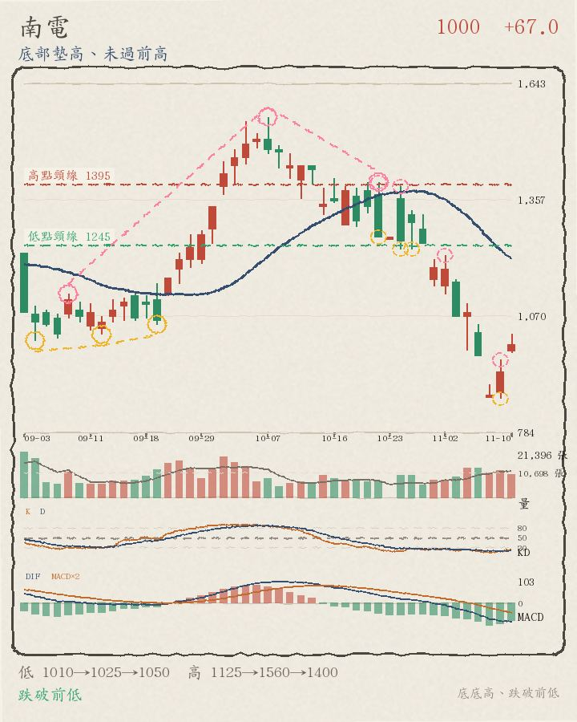
12:31 盤中 1000（+7.18%），比加權指數強 5.08 個百分點、跌破月線 1233.75，離高點頸線 1395 還差 28.3%，底部還在墊高（但高點沒同步創高）。
- 月線位置：現價 1000 在月線 1233.75 之下（-18.9%）；5 日線 986 也在月線之下（短均在下）；月線向下
- 量能：以已過交易時間推估，今天成交量約是 20 日均量的 1.56 倍（爆量），比 20 日均量大不少；上漲又量增，量價配合
- 關鍵價位：已跌破前一個轉折低點；高點頸線 1395 還在現價上方 28.3%；前一交易日高點 962（高於 4.0%）；今天盤中高點 1025（低於 2.4%）；今天盤中低點 980（高於 2.0%）
- 轉折結構：低點 1010、1025、1050 墊高（底底高），但高點 1125、1560、1400 沒有同步創高；還沒確認的轉折低點 10-28 1235、11-09 867；還沒確認的轉折高點 11-02 1220、11-09 962（圖上虛線小圈）
群聯 8299 上櫃
1660 +10.0（+0.61%）
區間或轉弱 盤中成交值 101.69 億・全榜第 20 名（上櫃第 4 名）・相對大盤 -1.49
好條件 1/7：攻擊量（量增＋上漲）
不好條件 4/7：跌破前低、相對大盤弱、在月線之下、月線下彎
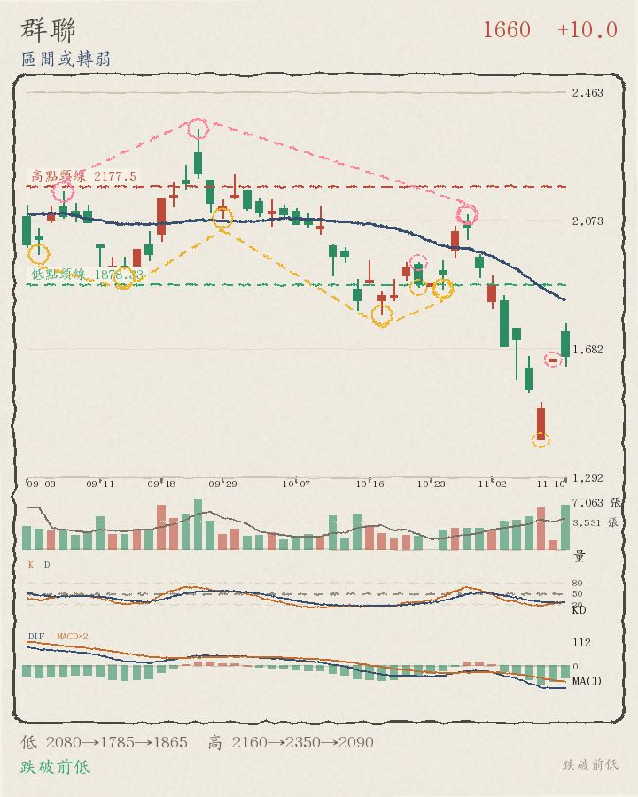
12:31 盤中 1660（+0.61%），比加權指數弱 1.49 個百分點、跌破月線 1850，離高點頸線 2177.5 還差 23.8%，轉折還沒走出明顯方向。
- 月線位置：現價 1660 在月線 1850 之下（-10.3%）；5 日線 1622 也在月線之下（短均在下）；月線向下
- 量能：以已過交易時間推估，今天成交量約是 20 日均量的 2.57 倍（爆量），比 20 日均量大不少；上漲又量增，量價配合
- 關鍵價位：已跌破前一個轉折低點；高點頸線 2177.5 還在現價上方 23.8%；前一交易日高點 1650（高於 0.6%）；今天盤中高點 1760（低於 5.7%）；今天盤中低點 1630（高於 1.8%）
- 轉折結構：低點 2080、1785、1865 與高點 2160、2350、2090 都沒有明顯遞增，屬於區間震盪或轉弱；還沒確認的轉折低點 10-27 1865、11-06 1405；還沒確認的轉折高點 10-29 2090、11-09 1650（圖上虛線小圈）
金像電 2368 上市
976 +82.0（+9.17%）
區間或轉弱 盤中成交值 99.02 億・全榜第 21 名（上市第 17 名）・相對大盤 +7.07
好條件 2/7：攻擊量（量增＋上漲）、守住今日高檔（距今日高點 1% 內）
不好條件 3/7：跌破前低、在月線之下、月線下彎
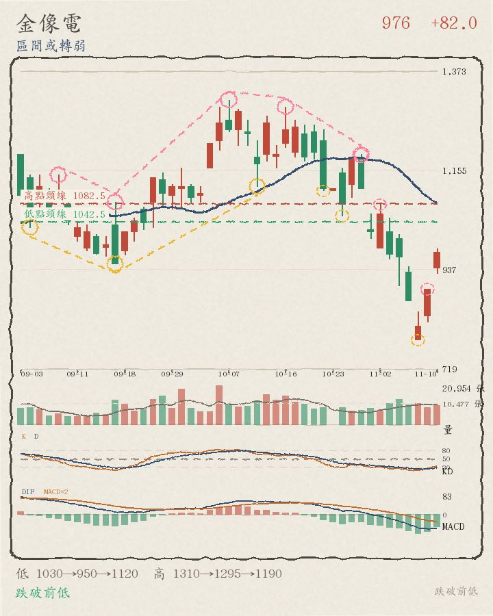
12:31 盤中 976（+9.17%），比加權指數強 7.07 個百分點、跌破月線 1096.45，離高點頸線 1082.5 還差 9.8%，轉折還沒走出明顯方向。
- 月線位置：現價 976 在月線 1096.45 之下（-11.0%）；5 日線 901.8 也在月線之下（短均在下）；月線向下
- 量能：以已過交易時間推估，今天成交量約是 20 日均量的 1.22 倍（量增），比 20 日均量大不少；上漲又量增，量價配合
- 關鍵價位：已跌破前一個轉折低點；高點頸線 1082.5 還在現價上方 9.8%；前一交易日高點 894（高於 9.2%）；今天盤中高點 983（低於 0.7%）；今天盤中低點 929（高於 5.1%）
- 轉折結構：低點 1030、950、1120 與高點 1310、1295、1190 都沒有明顯遞增，屬於區間震盪或轉弱；還沒確認的轉折低點 10-27 1055、11-06 782；還沒確認的轉折高點 11-02 1080、11-09 894（圖上虛線小圈）
華邦電 2344 上市
135 +2.5（+1.89%）
區間或轉弱 盤中成交值 97.16 億・全榜第 22 名（上市第 18 名）・相對大盤 -0.21
好條件 1/7：攻擊量（量增＋上漲）
不好條件 4/7：跌破前低、相對大盤弱、在月線之下、月線下彎
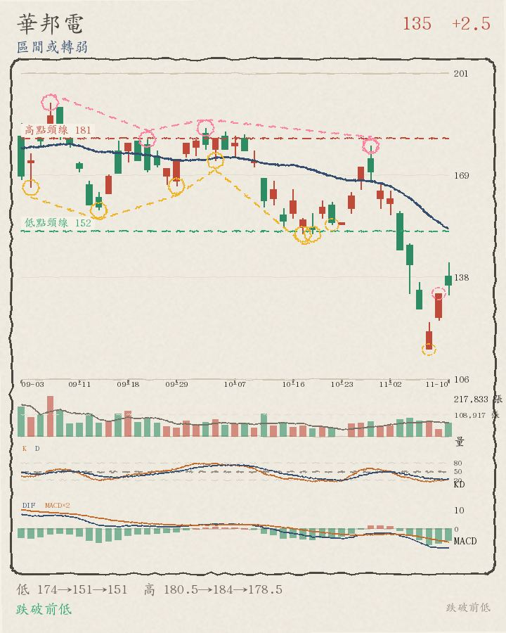
12:31 盤中 135（+1.89%），比加權指數弱 0.21 個百分點、跌破月線 154.675，離高點頸線 181 還差 25.4%，轉折還沒走出明顯方向。
- 月線位置：現價 135 在月線 154.675 之下（-12.7%）；5 日線 133.6 也在月線之下（短均在下）；月線向下
- 量能：以已過交易時間推估，今天成交量約是 20 日均量的 1.37 倍（量增），比 20 日均量大不少；上漲又量增，量價配合
- 關鍵價位：已跌破前一個轉折低點；高點頸線 181 還在現價上方 25.4%；前一交易日高點 132.5（高於 1.9%）；今天盤中高點 142（低於 4.9%）；今天盤中低點 132（高於 2.3%）
- 轉折結構：低點 174、151、151 與高點 180.5、184、178.5 都沒有明顯遞增，屬於區間震盪或轉弱；還沒確認的轉折低點 10-22 154、11-06 115；還沒確認的轉折高點 10-29 178.5、11-09 132.5（圖上虛線小圈）
京元電子 2449 上市
224.5 +15.0（+7.16%）
區間或轉弱 盤中成交值 92.81 億・全榜第 23 名（上市第 19 名）・相對大盤 +5.06
好條件 1/7：攻擊量（量增＋上漲）
不好條件 3/7：跌破前低、在月線之下、月線下彎
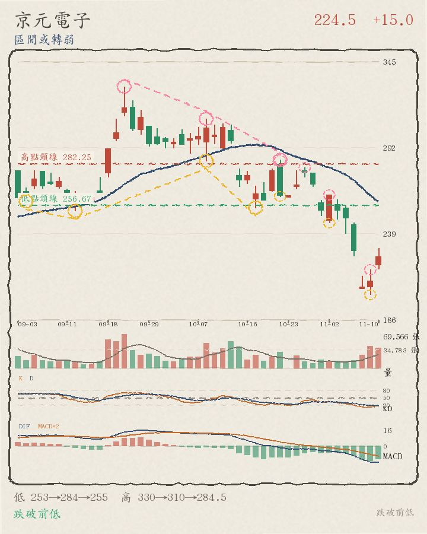
12:31 盤中 224.5（+7.16%），比加權指數強 5.06 個百分點、跌破月線 262.65，離高點頸線 282.25 還差 20.5%，轉折還沒走出明顯方向。
- 月線位置：現價 224.5 在月線 262.65 之下（-14.5%）；5 日線 229.2 也在月線之下（短均在下）；月線向下
- 量能：以已過交易時間推估，今天成交量約是 20 日均量的 2.11 倍（爆量），比 20 日均量大不少；上漲又量增，量價配合
- 關鍵價位：已跌破前一個轉折低點；高點頸線 282.25 還在現價上方 20.5%；前一交易日高點 216.5（高於 3.7%）；今天盤中高點 230（低於 2.4%）；今天盤中低點 217（高於 3.5%）
- 轉折結構：低點 253、284、255 與高點 330、310、284.5 都沒有明顯遞增，屬於區間震盪或轉弱；還沒確認的轉折低點 11-02 245.5、11-09 201；還沒確認的轉折高點 11-02 263、11-09 216.5（圖上虛線小圈）
信驊 5274 上櫃
11500 -200.0（-1.71%）
區間或轉弱 盤中成交值 91.89 億・全榜第 24 名（上櫃第 5 名）・相對大盤 -3.81
好條件 0/7：無
不好條件 5/7：跌破前低、今日下跌、相對大盤弱、在月線之下、月線下彎
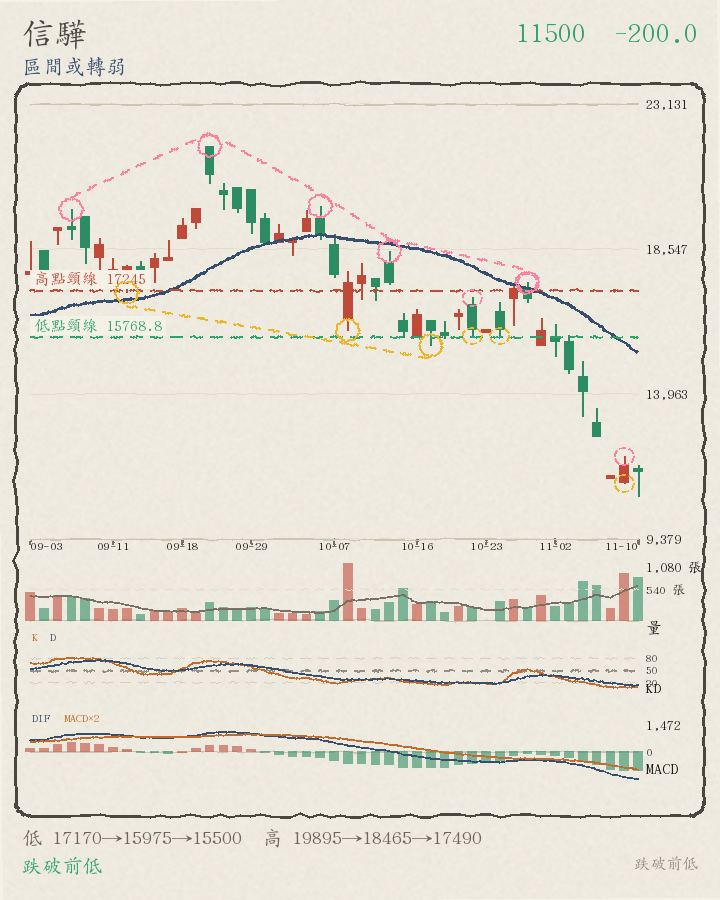
12:31 盤中 11500（-1.71%），比加權指數弱 3.81 個百分點、跌破月線 15587.2，離高點頸線 17245 還差 33.3%，轉折還沒走出明顯方向。
- 月線位置：現價 11500 在月線 15587.2 之下（-26.2%）；5 日線 12895 也在月線之下（短均在下）；月線向下
- 量能：以已過交易時間推估，今天成交量約是 20 日均量的 2.66 倍（爆量），比 20 日均量大不少；下跌卻量增，量價背離
- 關鍵價位：已跌破前一個轉折低點；高點頸線 17245 還在現價上方 33.3%；前一交易日高點 11990（低於 4.1%）；今天盤中高點 11700（低於 1.7%）；今天盤中低點 10710（高於 7.4%）
- 轉折結構：低點 17170、15975、15500 與高點 19895、18465、17490 都沒有明顯遞增，屬於區間震盪或轉弱；還沒確認的轉折低點 10-27 15800、11-09 11140；還沒確認的轉折高點 10-29 17490、11-09 11990（圖上虛線小圈）
臻鼎-KY 4958 上市
429 +31.0（+7.79%）
底部墊高、未過前高 盤中成交值 91.16 億・全榜第 25 名（上市第 20 名）・相對大盤 +5.69
好條件 1/7：底底高
不好條件 3/7：跌破前低、在月線之下、月線下彎
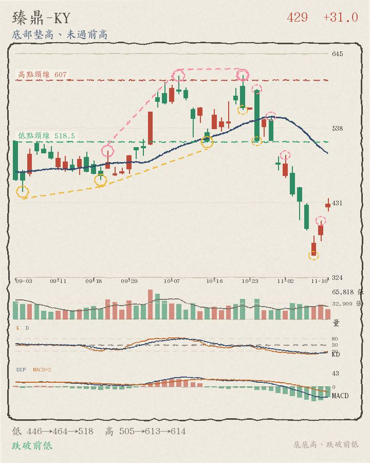
12:31 盤中 429（+7.79%），比加權指數強 5.69 個百分點、跌破月線 509.3，離高點頸線 607 還差 29.3%，底部還在墊高（但高點沒同步創高）。
- 月線位置：現價 429 在月線 509.3 之下（-15.8%）；5 日線 408.2 也在月線之下（短均在下）；月線向下
- 量能：以已過交易時間推估，今天成交量約是 20 日均量的 0.98 倍（量平），跟 20 日均量差不多
- 關鍵價位：已跌破前一個轉折低點；高點頸線 607 還在現價上方 29.3%；前一交易日高點 405（高於 5.9%）；今天盤中高點 437.5（低於 1.9%）；今天盤中低點 419（高於 2.4%）
- 轉折結構：低點 446.5、463.5、518 墊高（底底高），但高點 505、613、614 沒有同步創高；還沒確認的轉折低點 10-27 519、11-06 355；還沒確認的轉折高點 11-02 499、11-09 405（圖上虛線小圈）
奇鋐 3017 上市
2790 +250.0（+9.84%）
區間或轉弱 盤中成交值 90.45 億・全榜第 26 名（上市第 21 名）・相對大盤 +7.74
好條件 1/7：攻擊量（量增＋上漲）
不好條件 3/7：跌破前低、在月線之下、月線下彎
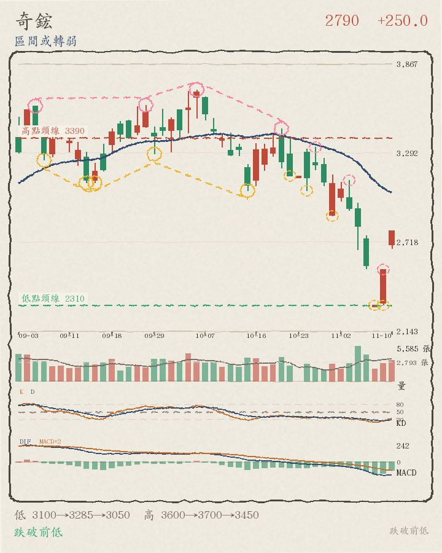
12:31 盤中 2790（+9.84%），比加權指數強 7.74 個百分點、跌破月線 3066.25，離高點頸線 3390 還差 17.7%，轉折還沒走出明顯方向。
- 月線位置：現價 2790 在月線 3066.25 之下（-9.0%）；5 日線 2634 也在月線之下（短均在下）；月線向下
- 量能：以已過交易時間推估，今天成交量約是 20 日均量的 1.46 倍（量增），比 20 日均量大不少；上漲又量增，量價配合
- 關鍵價位：已跌破前一個轉折低點；高點頸線 3390 還在現價上方 17.7%；前一交易日高點 2540（高於 9.8%）；今天盤中高點 2790（高於 0.0%）；今天盤中低點 2675（高於 4.3%）
- 轉折結構：低點 3100、3285、3050 與高點 3600、3700、3450 都沒有明顯遞增，屬於區間震盪或轉弱；還沒確認的轉折低點 11-06 2310、11-09 2310；還沒確認的轉折高點 11-03 3115、11-09 2540（圖上虛線小圈）
穩懋 3105 上櫃
478 +31.5（+7.05%）
區間或轉弱 盤中成交值 90.12 億・全榜第 27 名（上櫃第 6 名）・相對大盤 +4.95
好條件 0/7：無
不好條件 3/7：跌破前低、在月線之下、月線下彎
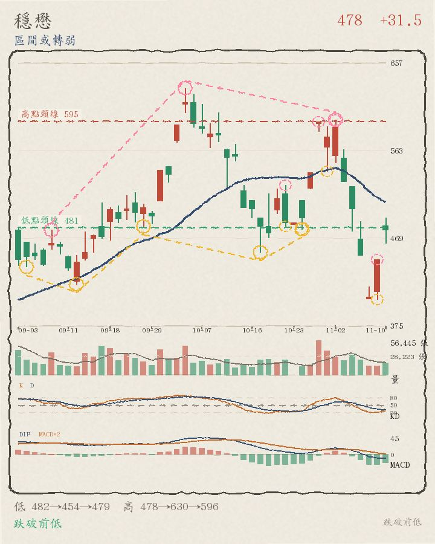
12:31 盤中 478（+7.05%），比加權指數強 4.95 個百分點、跌破月線 513.125，離高點頸線 595 還差 19.7%，轉折還沒走出明顯方向。
- 月線位置：現價 478 在月線 513.125 之下（-6.8%）；5 日線 466.9 也在月線之下（短均在下）；月線向下
- 量能：以已過交易時間推估，今天成交量約是 20 日均量的 1.04 倍（量平），跟 20 日均量差不多
- 關鍵價位：已跌破前一個轉折低點；高點頸線 595 還在現價上方 19.7%；前一交易日高點 446.5（高於 7.1%）；今天盤中高點 491（低於 2.6%）；今天盤中低點 464（高於 3.0%）
- 轉折結構：低點 482、454、479 與高點 478、630、596 都沒有明顯遞增，屬於區間震盪或轉弱；還沒確認的轉折低點 10-30 541、11-09 403.5；還沒確認的轉折高點 11-02 596、11-09 446.5（圖上虛線小圈）
華新科 2492 上市
286 +2.0（+0.70%）
區間或轉弱 盤中成交值 89.69 億・全榜第 28 名（上市第 22 名）・相對大盤 -1.40
好條件 1/7：攻擊量（量增＋上漲）
不好條件 4/7：跌破前低、相對大盤弱、在月線之下、月線下彎
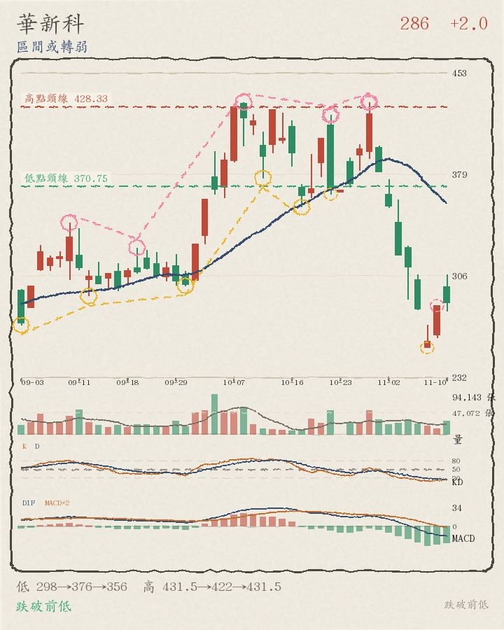
12:31 盤中 286（+0.70%），比加權指數弱 1.40 個百分點、跌破月線 364.9，離高點頸線 428.33 還差 33.2%，轉折還沒走出明顯方向。
- 月線位置：現價 286 在月線 364.9 之下（-21.6%）；5 日線 291.3 也在月線之下（短均在下）；月線向下
- 量能：以已過交易時間推估，今天成交量約是 20 日均量的 1.48 倍（量增），比 20 日均量大不少；上漲又量增，量價配合
- 關鍵價位：已跌破前一個轉折低點；高點頸線 428.33 還在現價上方 33.2%；前一交易日高點 284（高於 0.7%）；今天盤中高點 306.5（低於 6.7%）；今天盤中低點 280（高於 2.1%）
- 轉折結構：低點 298.5、376.5、355.5 與高點 431.5、422、431.5 都沒有明顯遞增，屬於區間震盪或轉弱；還沒確認的轉折低點 10-22 365、11-06 253.5；還沒確認的轉折高點 10-29 431.5、11-09 284（圖上虛線小圈）
智邦 2345 上市
1530 +125.0（+8.90%）
區間或轉弱 盤中成交值 89.35 億・全榜第 29 名（上市第 23 名）・相對大盤 +6.80
好條件 2/7：攻擊量（量增＋上漲）、守住今日高檔（距今日高點 1% 內）
不好條件 3/7：跌破前低、在月線之下、月線下彎
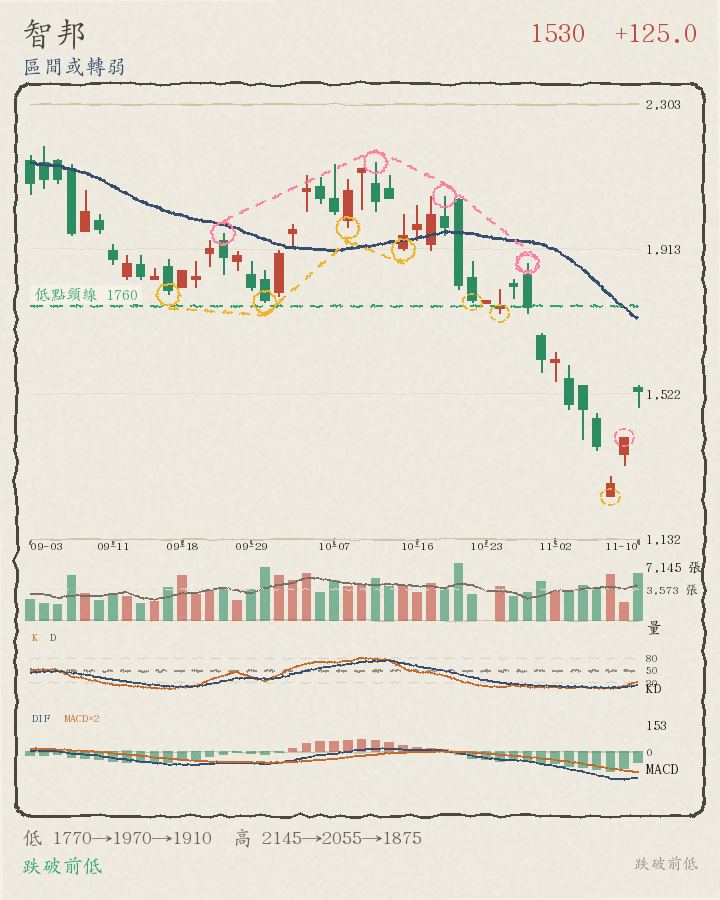
12:31 盤中 1530（+8.90%），比加權指數強 6.80 個百分點、跌破月線 1754.5，轉折還沒走出明顯方向。
- 月線位置：現價 1530 在月線 1754.5 之下（-12.8%）；5 日線 1408 也在月線之下（短均在下）；月線向下
- 量能：以已過交易時間推估，今天成交量約是 20 日均量的 1.76 倍（爆量），比 20 日均量大不少；上漲又量增，量價配合
- 關鍵價位：前一交易日高點 1405（高於 8.9%）；今天盤中高點 1545（低於 1.0%）；今天盤中低點 1485（高於 3.0%）
- 轉折結構：低點 1770、1970、1910 與高點 2145、2055、1875 都沒有明顯遞增，屬於區間震盪或轉弱；還沒確認的轉折低點 10-27 1740、11-06 1245；還沒確認的轉折高點 10-29 1875、11-09 1405（圖上虛線小圈）
鴻海 2317 上市
241 +2.0（+0.84%）
區間或轉弱 盤中成交值 84.88 億・全榜第 30 名（上市第 24 名）・相對大盤 -1.26
好條件 0/7：無
不好條件 3/7：相對大盤弱、在月線之下、月線下彎
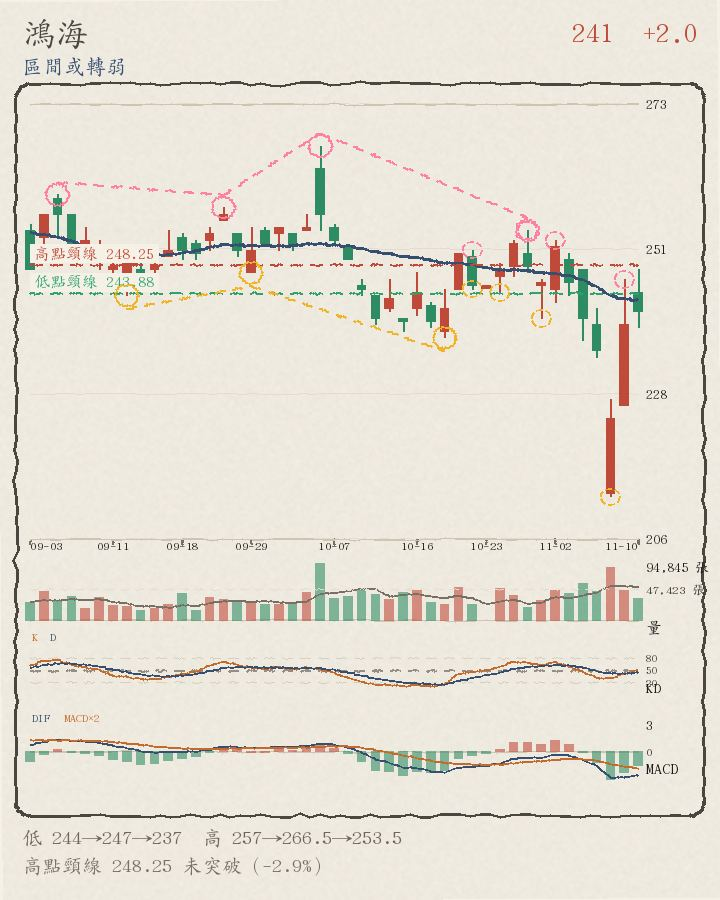
12:31 盤中 241（+0.84%），比加權指數弱 1.26 個百分點、跌破月線 242.975，離高點頸線 248.25 還差 2.9%，轉折還沒走出明顯方向。
- 月線位置：現價 241 在月線 242.975 之下（-0.8%）；5 日線 236.8 也在月線之下（短均在下）；月線向下
- 量能：以已過交易時間推估，今天成交量約是 20 日均量的 1.03 倍（量平），跟 20 日均量差不多
- 關鍵價位：高點頸線 248.25 還沒突破，差 2.9%；前一交易日高點 246（低於 2.0%）；今天盤中高點 247.5（低於 2.6%）；今天盤中低點 238.5（高於 1.0%）
- 轉折結構：低點 243.5、247、237 與高點 257、266.5、253.5 都沒有明顯遞增，屬於區間震盪或轉弱；還沒確認的轉折低點 10-30 240、11-06 212.5；還沒確認的轉折高點 11-02 252、11-09 246（圖上虛線小圈）
量平
↑ 回上方清單
藥華藥 6446 上市
1310 -60.0（-4.38%）
高點墊高、底部不穩 盤中成交值 70.96 億・全榜第 31 名（上市第 25 名）・相對大盤 -6.48
好條件 4/7：站上月線、月線向上、頭頭高、突破頸線
不好條件 2/7：今日下跌、相對大盤弱
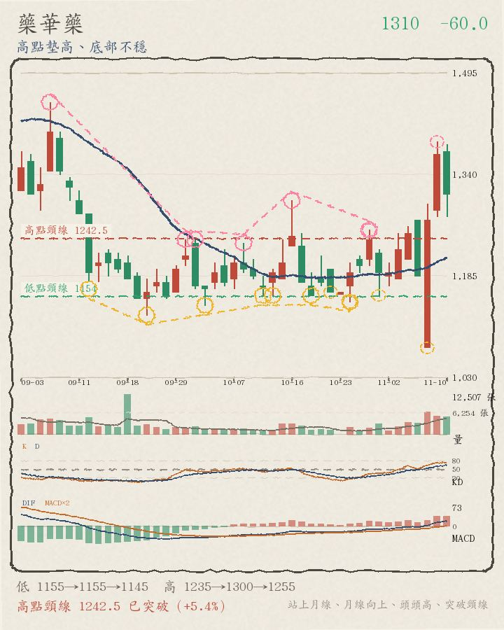
12:31 盤中 1310（-4.38%），比加權指數弱 6.48 個百分點、站上月線 1206.25，已突破高點頸線 1242.5，高點還在墊高（但底部沒同步墊高）。
- 月線位置：現價 1310 在月線 1206.25 之上（+8.6%）；5 日線 1260 也在月線之上（短均在上）；月線向上
- 量能：以已過交易時間推估，今天成交量約是 20 日均量的 3.06 倍（爆量），比 20 日均量大不少；下跌卻量增，量價背離
- 關鍵價位：高點頸線 1242.5 已站上；前一交易日高點 1390（低於 5.8%）；今天盤中高點 1385（低於 5.4%）；今天盤中低點 1275（高於 2.7%）
- 轉折結構：高點 1235、1300、1255 墊高（頭頭高），但低點 1155、1155、1145 沒有同步墊高；還沒確認的轉折低點 10-30 1155、11-06 1075；還沒確認的轉折高點 10-29 1255、11-09 1390（圖上虛線小圈）
雙鴻 3324 上櫃
1230 +80.0（+6.96%）
區間或轉弱 盤中成交值 66.83 億・全榜第 32 名（上櫃第 7 名）・相對大盤 +4.86
好條件 1/7：攻擊量（量增＋上漲）
不好條件 3/7：跌破前低、在月線之下、月線下彎
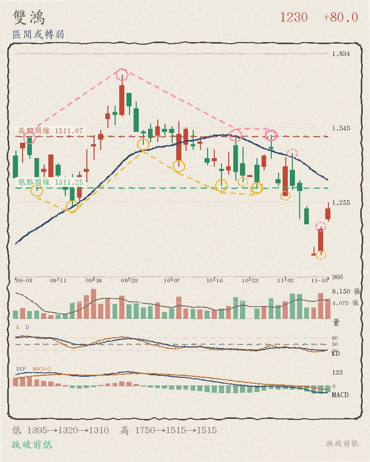
12:31 盤中 1230（+6.96%），比加權指數強 4.86 個百分點、跌破月線 1358.25，離高點頸線 1511.67 還差 18.6%，轉折還沒走出明顯方向。
- 月線位置：現價 1230 在月線 1358.25 之下（-9.4%）；5 日線 1199 也在月線之下（短均在下）；月線向下
- 量能：以已過交易時間推估，今天成交量約是 20 日均量的 1.81 倍（爆量），比 20 日均量大不少；上漲又量增，量價配合
- 關鍵價位：已跌破前一個轉折低點；高點頸線 1511.67 還在現價上方 18.6%；前一交易日高點 1160（高於 6.0%）；今天盤中高點 1255（低於 2.0%）；今天盤中低點 1180（高於 4.2%）
- 轉折結構：低點 1395、1320、1310 與高點 1750、1515、1515 都沒有明顯遞增，屬於區間震盪或轉弱；還沒確認的轉折低點 11-02 1280、11-09 1050；還沒確認的轉折高點 11-03 1445、11-09 1160（圖上虛線小圈）
群創 3481 上市
39.05 -0.6（-1.51%）
區間或轉弱 盤中成交值 63.75 億・全榜第 33 名（上市第 26 名）・相對大盤 -3.61
好條件 0/7：無
不好條件 5/7：跌破前低、今日下跌、相對大盤弱、在月線之下、月線下彎
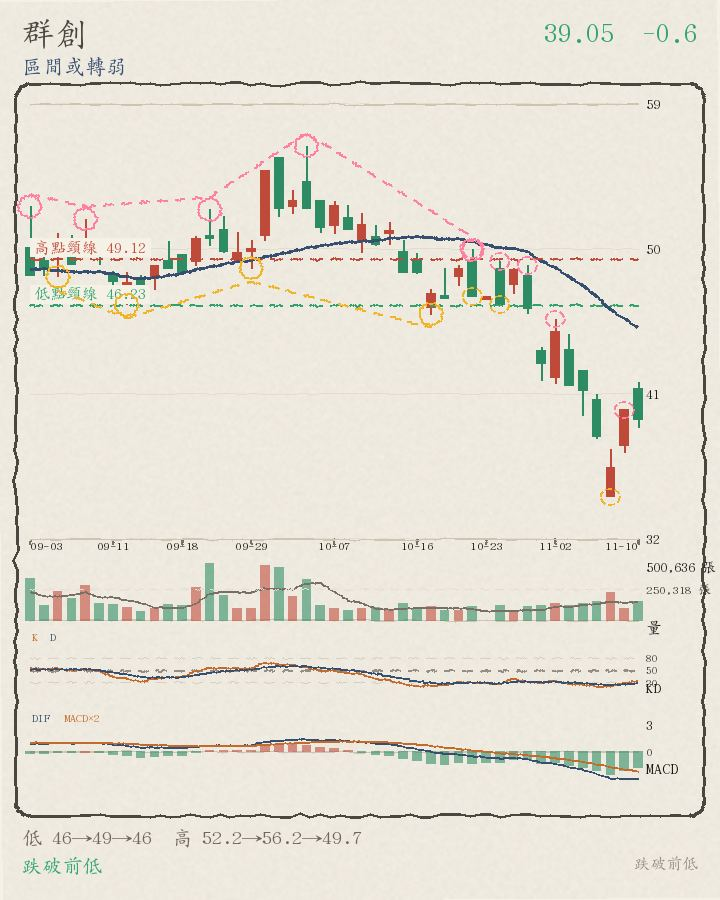
12:31 盤中 39.05（-1.51%），比加權指數弱 3.61 個百分點、跌破月線 45.405，離高點頸線 49.12 還差 20.5%，轉折還沒走出明顯方向。
- 月線位置：現價 39.05 在月線 45.405 之下（-14.0%）；5 日線 39.16 也在月線之下（短均在下）；月線向下
- 量能：以已過交易時間推估，今天成交量約是 20 日均量的 1.72 倍（爆量），比 20 日均量大不少；下跌卻量增，量價背離
- 關鍵價位：已跌破前一個轉折低點；高點頸線 49.12 還在現價上方 20.5%；前一交易日高點 39.65（低於 1.5%）；今天盤中高點 41.4（低於 5.7%）；今天盤中低點 38.55（高於 1.3%）
- 轉折結構：低點 46.25、48.55、45.65 與高點 52.2、56.2、49.7 都沒有明顯遞增，屬於區間震盪或轉弱；還沒確認的轉折低點 10-27 46.25、11-06 34.2；還沒確認的轉折高點 11-02 45.35、11-09 39.65（圖上虛線小圈）
力積電 6770 上市
60.7 +2.6（+4.48%）
區間或轉弱 盤中成交值 60 億・全榜第 34 名（上市第 27 名）・相對大盤 +2.38
好條件 1/7：攻擊量（量增＋上漲）
不好條件 3/7：跌破前低、在月線之下、月線下彎
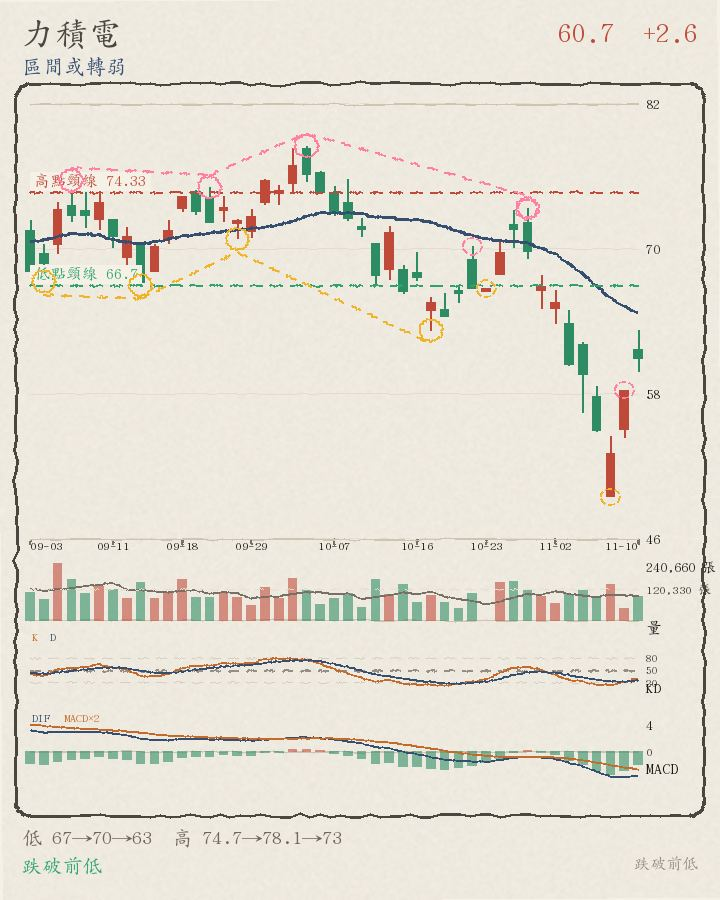
12:31 盤中 60.7（+4.48%），比加權指數強 2.38 個百分點、跌破月線 64.965，離高點頸線 74.33 還差 18.3%，轉折還沒走出明顯方向。
- 月線位置：現價 60.7 在月線 64.965 之下（-6.6%）；5 日線 57.08 也在月線之下（短均在下）；月線向下
- 量能：以已過交易時間推估，今天成交量約是 20 日均量的 1.15 倍（量增），比 20 日均量大不少；上漲又量增，量價配合
- 關鍵價位：已跌破前一個轉折低點；高點頸線 74.33 還在現價上方 18.3%；前一交易日高點 58.1（高於 4.5%）；今天盤中高點 63（低於 3.7%）；今天盤中低點 59.6（高於 1.8%）
- 轉折結構：低點 66.7、70.5、63 與高點 74.7、78.1、73 都沒有明顯遞增，屬於區間震盪或轉弱；還沒確認的轉折低點 10-23 66.4、11-06 49.35；還沒確認的轉折高點 10-29 73、11-09 58.1（圖上虛線小圈）
川湖 2059 上市
8470 +460.0（+5.74%）
區間或轉弱 盤中成交值 56.24 億・全榜第 35 名（上市第 28 名）・相對大盤 +3.64
好條件 1/7：攻擊量（量增＋上漲）
不好條件 3/7：跌破前低、在月線之下、月線下彎
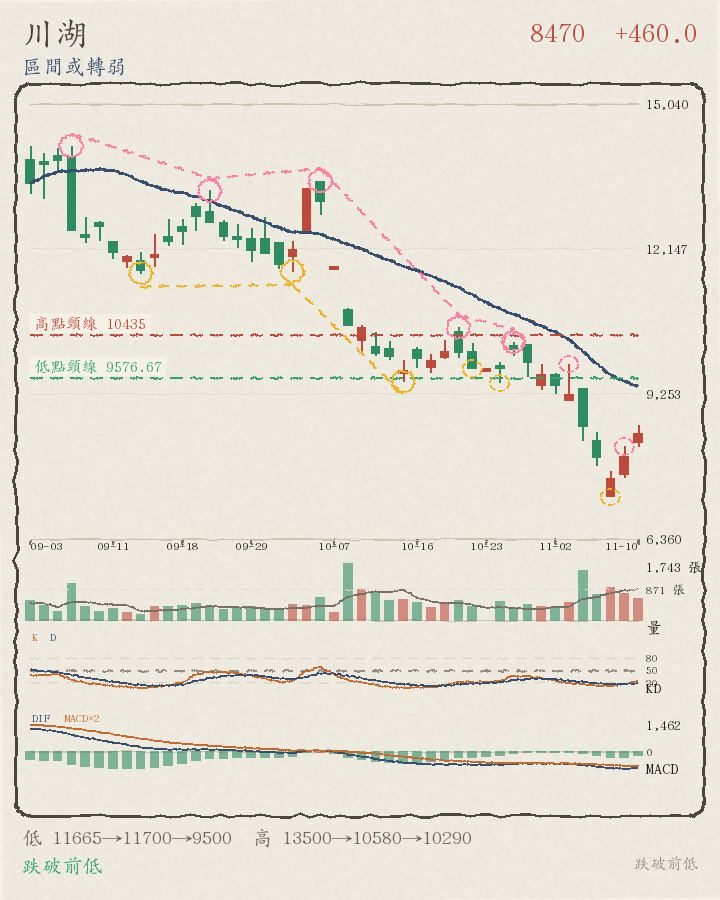
12:31 盤中 8470（+5.74%），比加權指數強 3.64 個百分點、跌破月線 9512.5，離高點頸線 10435 還差 18.8%，轉折還沒走出明顯方向。
- 月線位置：現價 8470 在月線 9512.5 之下（-11.0%）；5 日線 8282 也在月線之下（短均在下）；月線向下
- 量能：以已過交易時間推估，今天成交量約是 20 日均量的 1.24 倍（量增），比 20 日均量大不少；上漲又量增，量價配合
- 關鍵價位：已跌破前一個轉折低點；高點頸線 10435 還在現價上方 18.8%；前一交易日高點 8200（高於 3.3%）；今天盤中高點 8620（低於 1.7%）；今天盤中低點 8200（高於 3.3%）
- 轉折結構：低點 11665、11700、9500 與高點 13500、10580、10290 都沒有明顯遞增，屬於區間震盪或轉弱；還沒確認的轉折低點 10-27 9475、11-06 7200；還沒確認的轉折高點 11-03 9850、11-09 8200（圖上虛線小圈）
友達 2409 上市
27.65 -0.6（-1.95%）
底部墊高、未過前高 盤中成交值 54.56 億・全榜第 36 名（上市第 29 名）・相對大盤 -4.05
好條件 1/7：底底高
不好條件 5/7：跌破前低、今日下跌、相對大盤弱、在月線之下、月線下彎
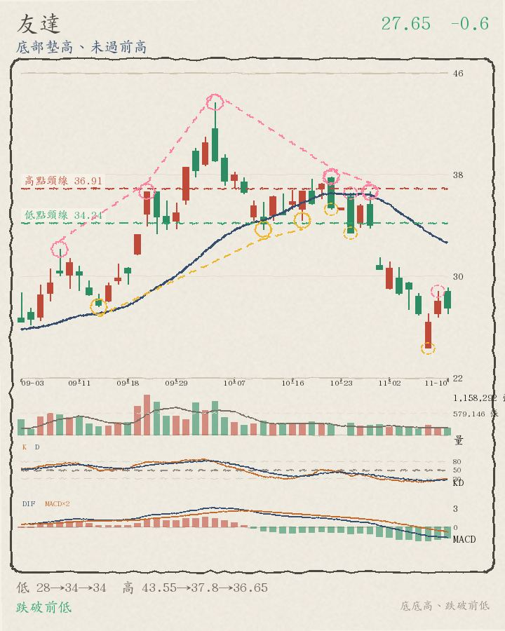
12:31 盤中 27.65（-1.95%），比加權指數弱 4.05 個百分點、跌破月線 33.08，離高點頸線 36.91 還差 25.1%，底部還在墊高（但高點沒同步創高）。
- 月線位置：現價 27.65 在月線 33.08 之下（-16.4%）；5 日線 27.98 也在月線之下（短均在下）；月線向下
- 量能：以已過交易時間推估，今天成交量約是 20 日均量的 0.87 倍（量平），比 20 日均量少一些
- 關鍵價位：已跌破前一個轉折低點；高點頸線 36.91 還在現價上方 25.1%；前一交易日高點 28.95（低於 4.5%）；今天盤中高點 29.25（低於 5.5%）；今天盤中低點 27.25（高於 1.5%）
- 轉折結構：低點 27.75、33.75、34.45 墊高（底底高），但高點 43.55、37.8、36.65 沒有同步創高；還沒確認的轉折低點 10-27 33.45、11-06 24.55；還沒確認的轉折高點 10-29 36.65、11-09 28.95（圖上虛線小圈）
鴻勁 7769 上市
4180 +140.0（+3.47%）
區間或轉弱 盤中成交值 53.17 億・全榜第 37 名（上市第 30 名）・相對大盤 +1.37
好條件 1/7：攻擊量（量增＋上漲）
不好條件 3/7：跌破前低、在月線之下、月線下彎

12:31 盤中 4180（+3.47%），比加權指數強 1.37 個百分點、跌破月線 5074.75，離高點頸線 5545 還差 24.6%，轉折還沒走出明顯方向。
- 月線位置：現價 4180 在月線 5074.75 之下（-17.6%）；5 日線 4106 也在月線之下（短均在下）；月線向下
- 量能：以已過交易時間推估，今天成交量約是 20 日均量的 1.94 倍（爆量），比 20 日均量大不少；上漲又量增，量價配合
- 關鍵價位：已跌破前一個轉折低點；高點頸線 5545 還在現價上方 24.6%；前一交易日高點 4040（高於 3.5%）；今天盤中高點 4345（低於 3.8%）；今天盤中低點 4040（高於 3.5%）
- 轉折結構：低點 5620、5380、5035 與高點 6615、6515、5610 都沒有明顯遞增，屬於區間震盪或轉弱；還沒確認的轉折低點 10-27 5070、11-06 3585；還沒確認的轉折高點 10-29 5610、11-09 4040（圖上虛線小圈）
晶豪科 3006 上市
224 -4.0（-1.75%）
區間或轉弱 盤中成交值 52.03 億・全榜第 38 名（上市第 31 名）・相對大盤 -3.85
好條件 0/7：無
不好條件 6/7：跌破前低、今日下跌、相對大盤弱、在月線之下、貼近今日低點（1% 內）、月線下彎

12:31 盤中 224（-1.75%），比加權指數弱 3.85 個百分點、跌破月線 243.875，離高點頸線 292 還差 23.3%，轉折還沒走出明顯方向。
- 月線位置：現價 224 在月線 243.875 之下（-8.2%）；5 日線 224.7 也在月線之下（短均在下）；月線向下
- 量能：以已過交易時間推估，今天成交量約是 20 日均量的 2.49 倍（爆量），比 20 日均量大不少；下跌卻量增，量價背離
- 關鍵價位：已跌破前一個轉折低點；高點頸線 292 還在現價上方 23.3%；前一交易日高點 228（低於 1.8%）；今天盤中高點 240（低於 6.7%）；今天盤中低點 222.5（高於 0.7%）
- 轉折結構：低點 263、265.5、226.5 與高點 290、290、291.5 都沒有明顯遞增，屬於區間震盪或轉弱；還沒確認的轉折低點 10-22 233、11-06 193；還沒確認的轉折高點 10-29 291.5、11-09 228（圖上虛線小圈）
光寶科 2301 上市
230.5 +13.0（+5.98%）
區間或轉弱 盤中成交值 51.3 億・全榜第 39 名（上市第 32 名）・相對大盤 +3.88
好條件 1/7：攻擊量（量增＋上漲）
不好條件 3/7：跌破前低、在月線之下、月線下彎
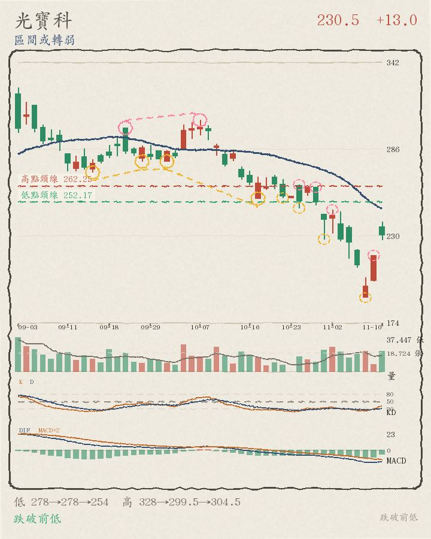
12:31 盤中 230.5（+5.98%），比加權指數強 3.88 個百分點、跌破月線 250.55，離高點頸線 262.25 還差 12.1%，轉折還沒走出明顯方向。
- 月線位置：現價 230.5 在月線 250.55 之下（-8.0%）；5 日線 216.2 也在月線之下（短均在下）；月線向下
- 量能：以已過交易時間推估，今天成交量約是 20 日均量的 1.76 倍（爆量），比 20 日均量大不少；上漲又量增，量價配合
- 關鍵價位：已跌破前一個轉折低點；高點頸線 262.25 還在現價上方 12.1%；前一交易日高點 217.5（高於 6.0%）；今天盤中高點 239（低於 3.6%）；今天盤中低點 227.5（高於 1.3%）
- 轉折結構：低點 278、278、254 與高點 328、299.5、304.5 都沒有明顯遞增，屬於區間震盪或轉弱；還沒確認的轉折低點 10-30 228、11-06 190.5；還沒確認的轉折高點 11-02 247、11-09 217.5（圖上虛線小圈）
貿聯-KY 3665 上市
1500 +80.0（+5.63%）
區間或轉弱 盤中成交值 50.3 億・全榜第 40 名（上市第 33 名）・相對大盤 +3.53
好條件 1/7：攻擊量（量增＋上漲）
不好條件 3/7：跌破前低、在月線之下、月線下彎
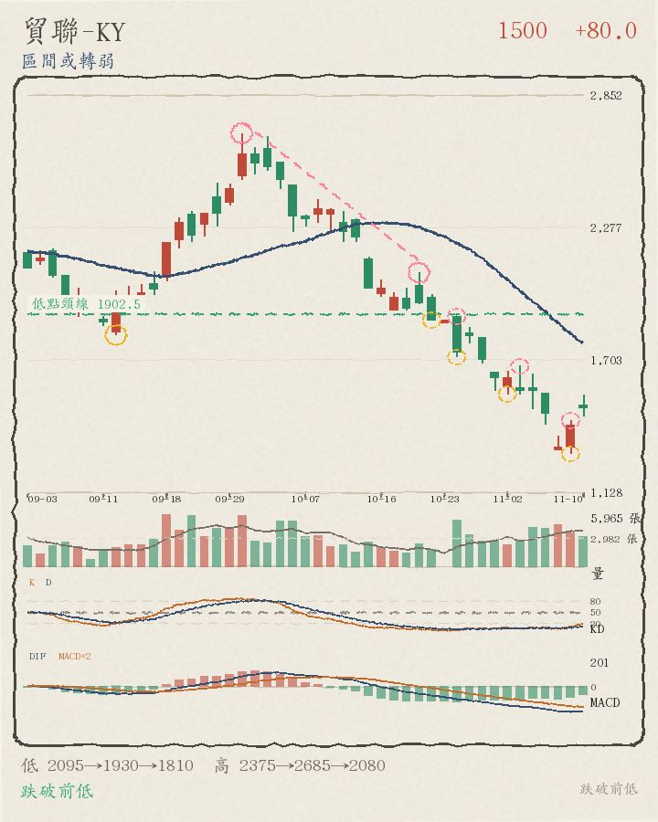
12:31 盤中 1500（+5.63%），比加權指數強 3.53 個百分點、跌破月線 1817，轉折還沒走出明顯方向。
- 月線位置：現價 1500 在月線 1817 之下（-17.4%）；5 日線 1472 也在月線之下（短均在下）；月線向下
- 量能：以已過交易時間推估，今天成交量約是 20 日均量的 1.45 倍（量增），比 20 日均量大不少；上漲又量增，量價配合
- 關鍵價位：前一交易日高點 1440（高於 4.2%）；今天盤中高點 1550（低於 3.2%）；今天盤中低點 1460（高於 2.7%）
- 轉折結構：低點 2095、1930、1810 與高點 2375、2685、2080 都沒有明顯遞增，屬於區間震盪或轉弱；還沒確認的轉折低點 11-02 1555、11-09 1295；還沒確認的轉折高點 11-03 1675、11-09 1440（圖上虛線小圈）
旺宏 2337 上市
81.9 -1.4（-1.68%）
區間或轉弱 盤中成交值 50.13 億・全榜第 41 名（上市第 34 名）・相對大盤 -3.78
好條件 0/7：無
不好條件 5/7：跌破前低、今日下跌、相對大盤弱、在月線之下、月線下彎
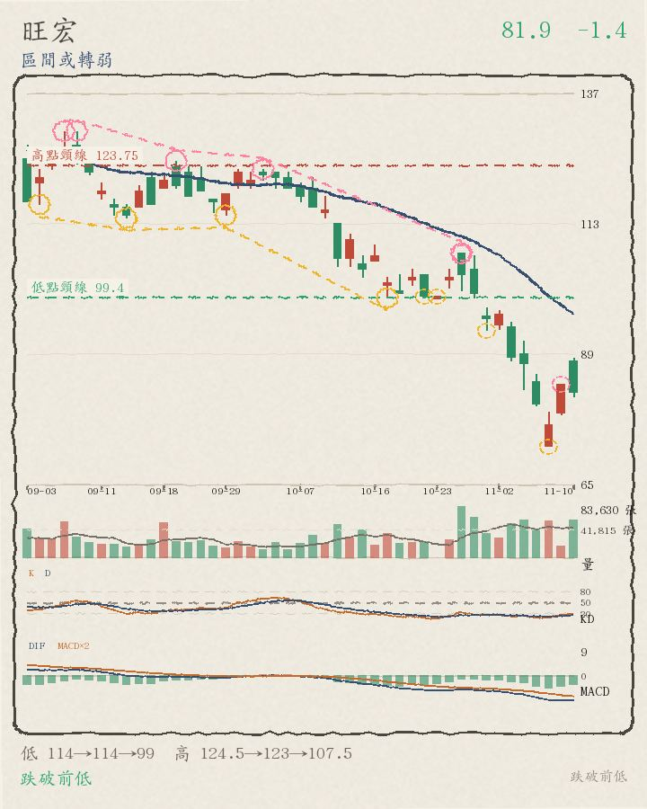
12:31 盤中 81.9（-1.68%），比加權指數弱 3.78 個百分點、跌破月線 97.995，離高點頸線 123.75 還差 33.8%，轉折還沒走出明顯方向。
- 月線位置：現價 81.9 在月線 97.995 之下（-16.4%）；5 日線 82.86 也在月線之下（短均在下）；月線向下
- 量能：以已過交易時間推估，今天成交量約是 20 日均量的 1.88 倍（爆量），比 20 日均量大不少；下跌卻量增，量價背離
- 關鍵價位：已跌破前一個轉折低點；高點頸線 123.75 還在現價上方 33.8%；前一交易日高點 83.3（低於 1.7%）；今天盤中高點 88.2（低於 7.1%）；今天盤中低點 81（高於 1.1%）
- 轉折結構：低點 114、114.5、99.2 與高點 124.5、123、107.5 都沒有明顯遞增，屬於區間震盪或轉弱；還沒確認的轉折低點 10-30 93.2、11-06 71.8；還沒確認的轉折高點 10-28 107.5、11-09 83.3（圖上虛線小圈）
景碩 3189 上市
727 +37.0（+5.36%）
底部墊高、未過前高 盤中成交值 50.01 億・全榜第 42 名（上市第 35 名）・相對大盤 +3.26
好條件 1/7：底底高
不好條件 3/7：跌破前低、在月線之下、月線下彎
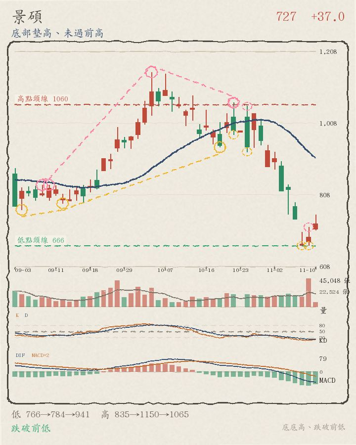
12:31 盤中 727（+5.36%），比加權指數強 3.26 個百分點、跌破月線 927.85，離高點頸線 1060 還差 31.4%，底部還在墊高（但高點沒同步創高）。
- 月線位置：現價 727 在月線 927.85 之下（-21.6%）；5 日線 748.4 也在月線之下（短均在下）；月線向下
- 量能：以已過交易時間推估，今天成交量約是 20 日均量的 0.58 倍（量縮），比 20 日均量少很多；上漲但量縮，量價背離
- 關鍵價位：已跌破前一個轉折低點；高點頸線 1060 還在現價上方 31.4%；前一交易日高點 718（高於 1.3%）；今天盤中高點 752（低於 3.3%）；今天盤中低點 709（高於 2.5%）
- 轉折結構：低點 766、784、941 墊高（底底高），但高點 835、1150、1065 沒有同步創高；還沒確認的轉折低點 11-06 666、11-09 666；還沒確認的轉折高點 10-27 1055、11-09 718（圖上虛線小圈）
禾伸堂 3026 上市
508 +9.0（+1.80%）
區間或轉弱 盤中成交值 49.93 億・全榜第 43 名（上市第 36 名）・相對大盤 -0.30
好條件 1/7：攻擊量（量增＋上漲）
不好條件 4/7：跌破前低、相對大盤弱、在月線之下、月線下彎
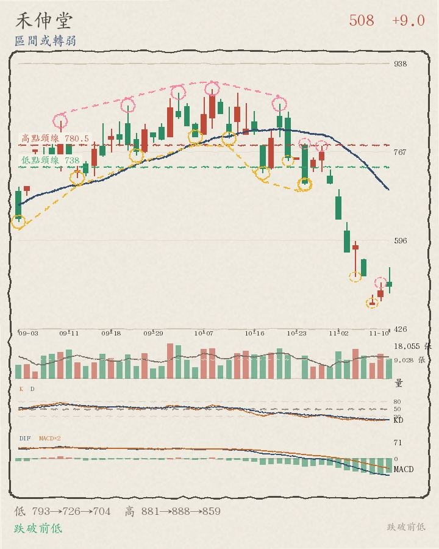
12:31 盤中 508（+1.80%），比加權指數弱 0.30 個百分點、跌破月線 710.175，離高點頸線 780.5 還差 34.9%，轉折還沒走出明顯方向。
- 月線位置：現價 508 在月線 710.175 之下（-28.5%）；5 日線 532.5 也在月線之下（短均在下）；月線向下
- 量能：以已過交易時間推估，今天成交量約是 20 日均量的 1.14 倍（量增），比 20 日均量大一些；上漲又量增，量價配合
- 關鍵價位：已跌破前一個轉折低點；高點頸線 780.5 還在現價上方 34.9%；前一交易日高點 515（低於 1.4%）；今天盤中高點 544（低於 6.6%）；今天盤中低點 495（高於 2.6%）
- 轉折結構：低點 793、726、704 與高點 881、888、859 都沒有明顯遞增，屬於區間震盪或轉弱；還沒確認的轉折低點 11-04 526、11-06 475.5；還沒確認的轉折高點 10-29 778、11-09 515（圖上虛線小圈）
台塑 1301 上市
70 +1.1（+1.60%）
上升趨勢（底底高＋頭頭高） 盤中成交值 48.65 億・全榜第 44 名（上市第 37 名）・相對大盤 -0.50
好條件 3/7：底底高、頭頭高、攻擊量（量增＋上漲）
不好條件 4/7：跌破前低、相對大盤弱、在月線之下、月線下彎
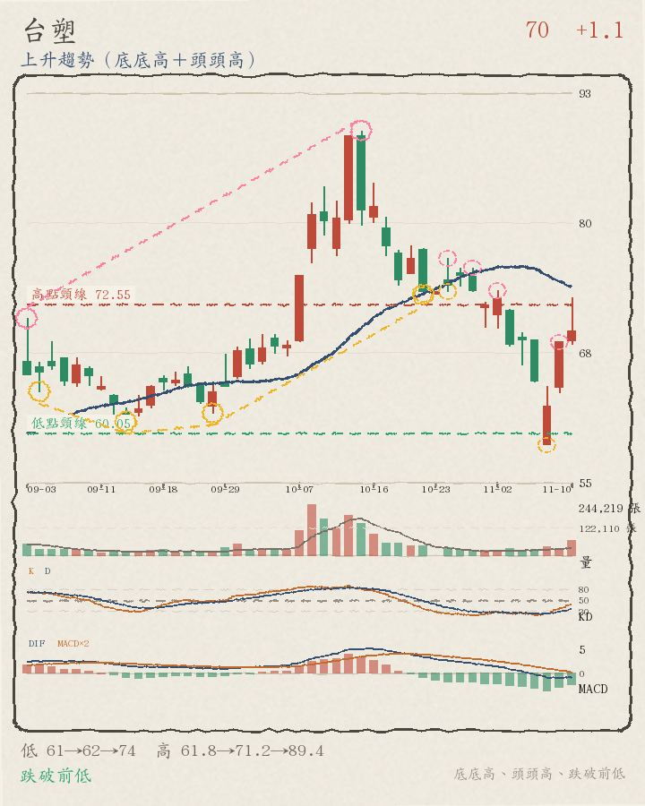
12:31 盤中 70（+1.60%），比加權指數弱 0.50 個百分點、跌破月線 74.79，離高點頸線 72.55 還差 3.5%，轉折結構仍是底底高＋頭頭高。
- 月線位置：現價 70 在月線 74.79 之下（-6.4%）；5 日線 66.9 也在月線之下（短均在下）；月線向下
- 量能：以已過交易時間推估，今天成交量約是 20 日均量的 1.17 倍（量增），比 20 日均量大不少；上漲又量增，量價配合
- 關鍵價位：已跌破前一個轉折低點；高點頸線 72.55 還在現價上方 3.5%；前一交易日高點 68.9（高於 1.6%）；今天盤中高點 73.2（低於 4.4%）；今天盤中低點 68.7（高於 1.9%）
- 轉折結構：低點 61.2、62、73.5 一路墊高、高點 61.8、71.2、89.4 也一路墊高，是底底高＋頭頭高；還沒確認的轉折低點 10-27 73.8、11-06 58.9；還沒確認的轉折高點 11-02 73.9、11-09 68.9（圖上虛線小圈）
玉晶光 3406 上市
905 +64.0（+7.61%）
區間或轉弱 盤中成交值 48.25 億・全榜第 45 名（上市第 38 名）・相對大盤 +5.51
好條件 0/7：無
不好條件 3/7：跌破前低、在月線之下、月線下彎
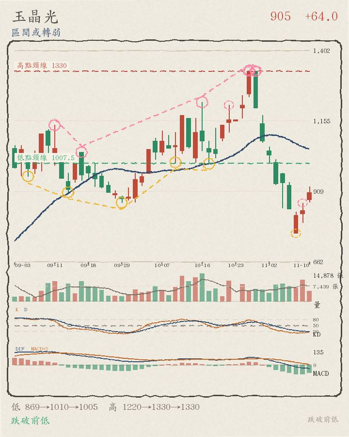
12:31 盤中 905（+7.61%），比加權指數強 5.51 個百分點、跌破月線 1065.1，離高點頸線 1330 還差 32.0%，轉折還沒走出明顯方向。
- 月線位置：現價 905 在月線 1065.1 之下（-15.0%）；5 日線 877.4 也在月線之下（短均在下）；月線向下
- 量能：以已過交易時間推估，今天成交量約是 20 日均量的 0.86 倍（量平），比 20 日均量少一些
- 關鍵價位：已跌破前一個轉折低點；高點頸線 1330 還在現價上方 32.0%；前一交易日高點 868（高於 4.3%）；今天盤中高點 925（低於 2.2%）；今天盤中低點 870（高於 4.0%）
- 轉折結構：低點 869、1010、1005 與高點 1220、1330、1330 都沒有明顯遞增，屬於區間震盪或轉弱；還沒確認的轉折低點 11-06 762；還沒確認的轉折高點 10-29 1330、11-09 868（圖上虛線小圈）
騰輝電子-KY 6672 上市
501 +8.0（+1.62%）
底部墊高、未過前高 盤中成交值 47.86 億・全榜第 46 名（上市第 39 名）・相對大盤 -0.48
好條件 3/7：月線向上、底底高、攻擊量（量增＋上漲）
不好條件 3/7：跌破前低、相對大盤弱、在月線之下
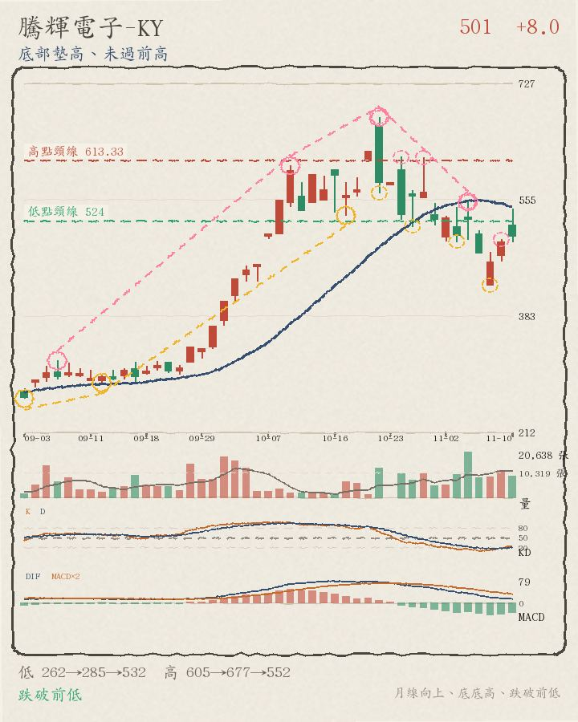
12:31 盤中 501（+1.62%），比加權指數弱 0.48 個百分點、跌破月線 549.525，離高點頸線 613.33 還差 18.3%，底部還在墊高（但高點沒同步創高）。
- 月線位置：現價 501 在月線 549.525 之下（-8.8%）；5 日線 492.7 也在月線之下（短均在下）；月線向上
- 量能：以已過交易時間推估，今天成交量約是 20 日均量的 1.81 倍（爆量），比 20 日均量大不少；上漲又量增，量價配合
- 關鍵價位：已跌破前一個轉折低點；高點頸線 613.33 還在現價上方 18.3%；前一交易日高點 496.5（高於 0.9%）；今天盤中高點 542（低於 7.6%）；今天盤中低點 492.5（高於 1.7%）
- 轉折結構：低點 261.5、285、532 墊高（底底高），但高點 605、677、552 沒有同步創高；還沒確認的轉折低點 11-03 493.5、11-06 429；還沒確認的轉折高點 11-04 552、11-09 496.5（圖上虛線小圈）
頎邦 6147 上櫃
170 +14.0（+8.97%）
區間或轉弱 盤中成交值 47.2 億・全榜第 47 名（上櫃第 8 名）・相對大盤 +6.87
好條件 2/7：攻擊量（量增＋上漲）、守住今日高檔（距今日高點 1% 內）
不好條件 3/7：跌破前低、在月線之下、月線下彎
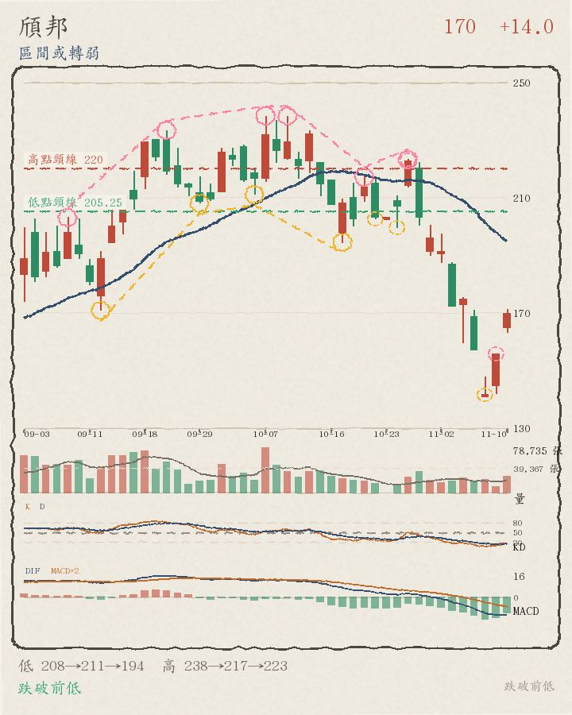
12:31 盤中 170（+8.97%），比加權指數強 6.87 個百分點、跌破月線 197.85，離高點頸線 220 還差 22.7%，轉折還沒走出明顯方向。
- 月線位置：現價 170 在月線 197.85 之下（-14.1%）；5 日線 160.6 也在月線之下（短均在下）；月線向下
- 量能：以已過交易時間推估，今天成交量約是 20 日均量的 1.36 倍（量增），比 20 日均量大不少；上漲又量增，量價配合
- 關鍵價位：已跌破前一個轉折低點；高點頸線 220 還在現價上方 22.7%；前一交易日高點 156（高於 9.0%）；今天盤中高點 171.5（低於 0.9%）；今天盤中低點 163.5（高於 4.0%）
- 轉折結構：低點 208、211、194.5 與高點 238、217、223 都沒有明顯遞增，屬於區間震盪或轉弱；還沒確認的轉折低點 10-27 199.5、11-06 142；還沒確認的轉折高點 10-28 223、11-09 156（圖上虛線小圈）
大量 3167 上市
803 +64.0（+8.66%）
區間或轉弱 盤中成交值 46.22 億・全榜第 48 名（上市第 40 名）・相對大盤 +6.56
好條件 1/7：攻擊量（量增＋上漲）
不好條件 3/7：跌破前低、在月線之下、月線下彎
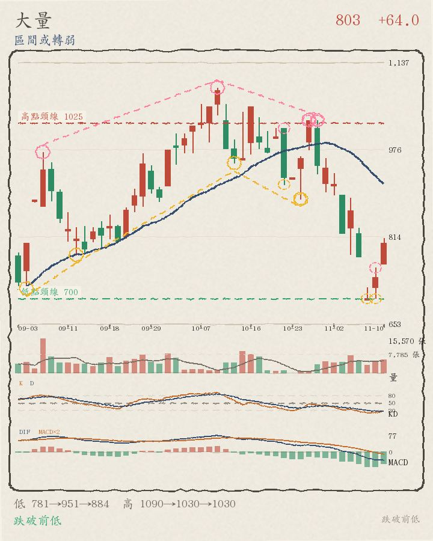
12:31 盤中 803（+8.66%），比加權指數強 6.56 個百分點、跌破月線 926.75，離高點頸線 1025 還差 21.7%，轉折還沒走出明顯方向。
- 月線位置：現價 803 在月線 926.75 之下（-13.3%）；5 日線 780 也在月線之下（短均在下）；月線向下
- 量能：以已過交易時間推估，今天成交量約是 20 日均量的 1.87 倍（爆量），比 20 日均量大不少；上漲又量增，量價配合
- 關鍵價位：已跌破前一個轉折低點；高點頸線 1025 還在現價上方 21.7%；前一交易日高點 757（高於 6.1%）；今天盤中高點 812（低於 1.1%）；今天盤中低點 764（高於 5.1%）
- 轉折結構：低點 781、951、884 與高點 1090、1030、1030 都沒有明顯遞增，屬於區間震盪或轉弱；還沒確認的轉折低點 11-06 700、11-09 700；還沒確認的轉折高點 10-29 1030、11-09 757（圖上虛線小圈）
富世達 6805 上市
2000 +145.0（+7.82%）
區間或轉弱 盤中成交值 45.42 億・全榜第 49 名（上市第 41 名）・相對大盤 +5.72
好條件 1/7：攻擊量（量增＋上漲）
不好條件 3/7：跌破前低、在月線之下、月線下彎
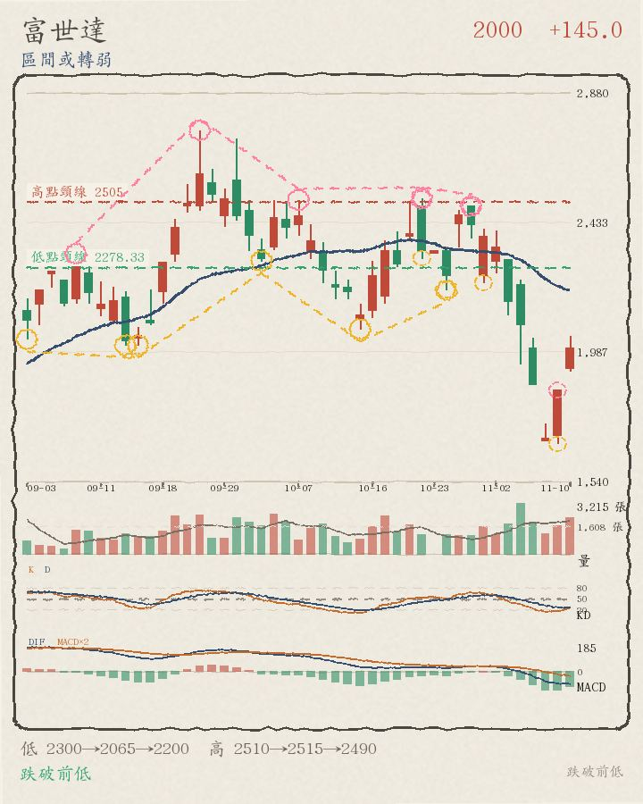
12:31 盤中 2000（+7.82%），比加權指數強 5.72 個百分點、跌破月線 2213，離高點頸線 2505 還差 20.2%，轉折還沒走出明顯方向。
- 月線位置：現價 2000 在月線 2213 之下（-9.6%）；5 日線 1932 也在月線之下（短均在下）；月線向下
- 量能：以已過交易時間推估，今天成交量約是 20 日均量的 1.87 倍（爆量），比 20 日均量大不少；上漲又量增，量價配合
- 關鍵價位：已跌破前一個轉折低點；高點頸線 2505 還在現價上方 20.2%；前一交易日高點 1855（高於 7.8%）；今天盤中高點 2040（低於 2.0%）；今天盤中低點 1920（高於 4.2%）
- 轉折結構：低點 2300、2065、2200 與高點 2510、2515、2490 都沒有明顯遞增，屬於區間震盪或轉弱；還沒確認的轉折低點 10-30 2225、11-09 1670；還沒確認的轉折高點 10-29 2490、11-09 1855（圖上虛線小圈）
緯穎 6669 上市
1670 +25.0（+1.52%）
區間或轉弱 盤中成交值 43.49 億・全榜第 50 名（上市第 42 名）・相對大盤 -0.58
好條件 0/7：無
不好條件 4/7：跌破前低、相對大盤弱、在月線之下、月線下彎
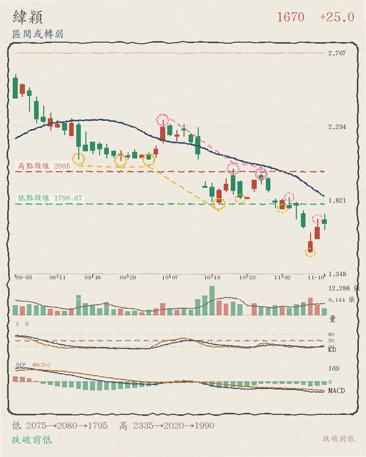
12:31 盤中 1670（+1.52%），比加權指數弱 0.58 個百分點、跌破月線 1876.25，離高點頸線 2005 還差 16.7%，轉折還沒走出明顯方向。
- 月線位置：現價 1670 在月線 1876.25 之下（-11.0%）；5 日線 1681 也在月線之下（短均在下）；月線向下
- 量能：以已過交易時間推估，今天成交量約是 20 日均量的 0.69 倍（量縮），比 20 日均量少很多；上漲但量縮，量價背離
- 關鍵價位：已跌破前一個轉折低點；高點頸線 2005 還在現價上方 16.7%；前一交易日高點 1700（低於 1.8%）；今天盤中高點 1730（低於 3.5%）；今天盤中低點 1630（高於 2.5%）
- 轉折結構：低點 2075、2080、1795 與高點 2335、2020、1990 都沒有明顯遞增，屬於區間震盪或轉弱；還沒確認的轉折低點 11-02 1765、11-06 1485；還沒確認的轉折高點 11-03 1840、11-09 1700（圖上虛線小圈）
高力 8996 上市
1395 +115.0（+8.98%）
區間或轉弱 盤中成交值 43.16 億・全榜第 51 名（上市第 43 名）・相對大盤 +6.88
好條件 1/7：守住今日高檔（距今日高點 1% 內）
不好條件 3/7：跌破前低、在月線之下、月線下彎
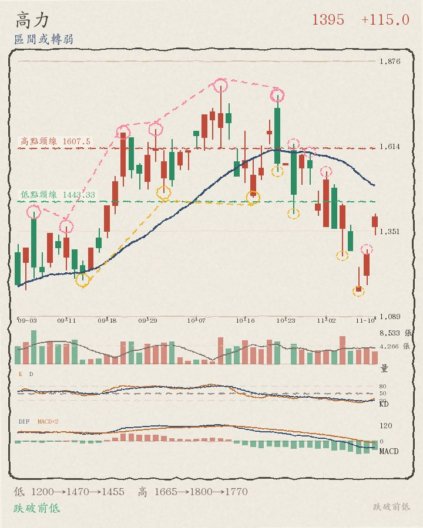
12:31 盤中 1395（+8.98%），比加權指數強 6.88 個百分點、跌破月線 1507，離高點頸線 1607.5 還差 13.2%，轉折還沒走出明顯方向。
- 月線位置：現價 1395 在月線 1507 之下（-7.4%）；5 日線 1308 也在月線之下（短均在下）；月線向下
- 量能：以已過交易時間推估，今天成交量約是 20 日均量的 0.98 倍（量平），跟 20 日均量差不多
- 關鍵價位：已跌破前一個轉折低點；高點頸線 1607.5 還在現價上方 13.2%；前一交易日高點 1295（高於 7.7%）；今天盤中高點 1405（低於 0.7%）；今天盤中低點 1340（高於 4.1%）
- 轉折結構：低點 1200、1470、1455 與高點 1665、1800、1770 都沒有明顯遞增，屬於區間震盪或轉弱；還沒確認的轉折低點 11-04 1275、11-06 1165；還沒確認的轉折高點 11-02 1535、11-09 1295（圖上虛線小圈）
緯創 3231 上市
168.5 +0.0（+0.00%）
高點墊高、底部不穩 盤中成交值 43.03 億・全榜第 52 名（上市第 44 名）・相對大盤 -2.10
好條件 1/7：頭頭高
不好條件 4/7：跌破前低、相對大盤弱、在月線之下、月線下彎
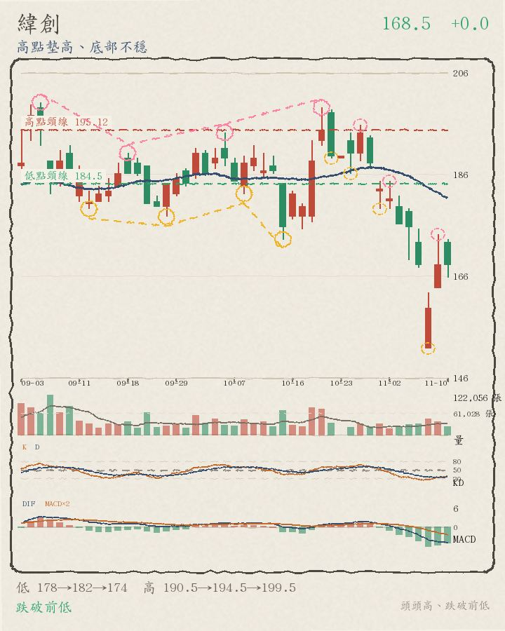
12:31 盤中 168.5（+0.00%），比加權指數弱 2.10 個百分點、跌破月線 182.7，離高點頸線 195.12 還差 13.6%，高點還在墊高（但底部沒同步墊高）。
- 月線位置：現價 168.5 在月線 182.7 之下（-7.8%）；5 日線 169.9 也在月線之下（短均在下）；月線向下
- 量能：以已過交易時間推估，今天成交量約是 20 日均量的 0.85 倍（量平），比 20 日均量少一些
- 關鍵價位：已跌破前一個轉折低點；高點頸線 195.12 還在現價上方 13.6%；前一交易日高點 174.5（低於 3.4%）；今天盤中高點 173.5（低於 2.9%）；今天盤中低點 166（高於 1.5%）
- 轉折結構：高點 190.5、194.5、199.5 墊高（頭頭高），但低點 178、182.5、173.5 沒有同步墊高；還沒確認的轉折低點 10-30 179.5、11-06 152；還沒確認的轉折高點 11-02 185、11-09 174.5（圖上虛線小圈）
光聖 6442 上市
1130 +25.0（+2.26%）
區間或轉弱 盤中成交值 42.35 億・全榜第 53 名（上市第 45 名）・相對大盤 +0.16
好條件 1/7：攻擊量（量增＋上漲）
不好條件 3/7：跌破前低、在月線之下、月線下彎
12:31 盤中 1130（+2.26%），比加權指數強 0.16 個百分點、跌破月線 1367.25，離高點頸線 1457.5 還差 22.5%，轉折還沒走出明顯方向。
- 月線位置：現價 1130 在月線 1367.25 之下（-17.4%）；5 日線 1090 也在月線之下（短均在下）；月線向下
- 量能：以已過交易時間推估，今天成交量約是 20 日均量的 2.66 倍（爆量），比 20 日均量大不少；上漲又量增，量價配合
- 關鍵價位：已跌破前一個轉折低點；高點頸線 1457.5 還在現價上方 22.5%；前一交易日高點 1105（高於 2.3%）；今天盤中高點 1200（低於 5.8%）；今天盤中低點 1095（高於 3.2%）
- 轉折結構：低點 1560、1495、1465 與高點 1695、1920、1815 都沒有明顯遞增，屬於區間震盪或轉弱；還沒確認的轉折低點 10-30 1185、11-06 963；還沒確認的轉折高點 11-02 1280、11-09 1105（圖上虛線小圈）
華通 2313 上市
182.5 +8.0（+4.58%）
上升趨勢（底底高＋頭頭高） 盤中成交值 42.07 億・全榜第 54 名（上市第 46 名）・相對大盤 +2.48
好條件 2/7：底底高、頭頭高
不好條件 3/7：跌破前低、在月線之下、月線下彎
12:31 盤中 182.5（+4.58%），比加權指數強 2.48 個百分點、跌破月線 216.55，離高點頸線 232 還差 21.3%，轉折結構仍是底底高＋頭頭高。
- 月線位置：現價 182.5 在月線 216.55 之下（-15.7%）；5 日線 173.5 也在月線之下（短均在下）；月線向下
- 量能：以已過交易時間推估，今天成交量約是 20 日均量的 1.03 倍（量平），跟 20 日均量差不多
- 關鍵價位：已跌破前一個轉折低點；高點頸線 232 還在現價上方 21.3%；前一交易日高點 174.5（高於 4.6%）；今天盤中高點 189（低於 3.4%）；今天盤中低點 178（高於 2.5%）
- 轉折結構：低點 213、219、228 一路墊高、高點 235、261、266 也一路墊高，是底底高＋頭頭高；還沒確認的轉折低點 10-27 215、11-06 149；還沒確認的轉折高點 11-02 209、11-09 174.5（圖上虛線小圈）
台虹 8039 上市
214 +6.0（+2.88%）
區間或轉弱 盤中成交值 40.45 億・全榜第 55 名（上市第 47 名）・相對大盤 +0.78
好條件 0/7：無
不好條件 3/7：跌破前低、在月線之下、月線下彎
12:31 盤中 214（+2.88%），比加權指數強 0.78 個百分點、跌破月線 260.6，離高點頸線 329.17 還差 35.0%，轉折還沒走出明顯方向。
- 月線位置：現價 214 在月線 260.6 之下（-17.9%）；5 日線 208.5 也在月線之下（短均在下）；月線向下
- 量能：以已過交易時間推估，今天成交量約是 20 日均量的 0.76 倍（量平），比 20 日均量少很多；上漲但量縮，量價背離
- 關鍵價位：已跌破前一個轉折低點；高點頸線 329.17 還在現價上方 35.0%；前一交易日高點 208（高於 2.9%）；今天盤中高點 227（低於 5.7%）；今天盤中低點 208.5（高於 2.6%）
- 轉折結構：低點 256.5、253、268.5 與高點 327.5、331.5、328.5 都沒有明顯遞增，屬於區間震盪或轉弱；還沒確認的轉折低點 10-27 253、11-06 181.5；還沒確認的轉折高點 10-28 275、11-09 208（圖上虛線小圈）
金山電 8042 上櫃
131 -3.5（-2.60%）
高點墊高、底部不穩 盤中成交值 38.39 億・全榜第 56 名（上櫃第 9 名）・相對大盤 -4.70
好條件 2/7：月線向上、頭頭高
不好條件 4/7：今日下跌、相對大盤弱、在月線之下、跌破昨日低點
12:31 盤中 131（-2.60%），比加權指數弱 4.70 個百分點、跌破月線 137.075，離高點頸線 141.9 還差 7.7%，高點還在墊高（但底部沒同步墊高）。
- 月線位置：現價 131 在月線 137.075 之下（-4.4%）；5 日線 129.8 也在月線之下（短均在下）；月線向上
- 量能：以已過交易時間推估，今天成交量約是 20 日均量的 1.79 倍（爆量），比 20 日均量大不少；下跌卻量增，量價背離
- 關鍵價位：高點頸線 141.9 還沒突破，差 7.7%；前一交易日高點 141.5（低於 7.4%）；今天盤中高點 144.5（低於 9.3%）；今天盤中低點 126（高於 4.0%）
- 轉折結構：高點 166、154.5、144.5 墊高（頭頭高），但低點 110、129、129.5 沒有同步墊高；還沒確認的轉折低點 11-04 120、11-06 118.5；還沒確認的轉折高點 11-05 145、11-09 141.5（圖上虛線小圈）
致茂 2360 上市
1370 +120.0（+9.60%）
區間或轉弱 盤中成交值 38.26 億・全榜第 57 名（上市第 48 名）・相對大盤 +7.50
好條件 2/7：攻擊量（量增＋上漲）、守住今日高檔（距今日高點 1% 內）
不好條件 3/7：跌破前低、在月線之下、月線下彎
12:31 盤中 1370（+9.60%），比加權指數強 7.50 個百分點、跌破月線 1851.25，離高點頸線 2090 還差 34.4%，轉折還沒走出明顯方向。
- 月線位置：現價 1370 在月線 1851.25 之下（-26.0%）；5 日線 1361 也在月線之下（短均在下）；月線向下
- 量能：以已過交易時間推估，今天成交量約是 20 日均量的 1.17 倍（量增），比 20 日均量大不少；上漲又量增，量價配合
- 關鍵價位：已跌破前一個轉折低點；高點頸線 2090 還在現價上方 34.4%；前一交易日高點 1270（高於 7.9%）；今天盤中高點 1375（低於 0.4%）；今天盤中低點 1310（高於 4.6%）
- 轉折結構：低點 2070、2025、1945 與高點 2560、2110、2070 都沒有明顯遞增，屬於區間震盪或轉弱；還沒確認的轉折低點 10-27 1905、11-09 1190；還沒確認的轉折高點 10-29 2070、11-09 1270（圖上虛線小圈）
倉和 6538 上櫃
310.5 -6.0（-1.90%）
區間或轉弱 盤中成交值 37.01 億・全榜第 58 名（上櫃第 10 名）・相對大盤 -4.00
好條件 2/7：站上月線、突破頸線
不好條件 3/7：今日下跌、相對大盤弱、月線下彎
12:31 盤中 310.5（-1.90%），比加權指數弱 4.00 個百分點、站上月線 294.475，已突破高點頸線 305.5，轉折還沒走出明顯方向。
- 月線位置：現價 310.5 在月線 294.475 之上（+5.4%）；5 日線 281.3 也在月線之下（短均在下）；月線向下
- 量能：以已過交易時間推估，今天成交量約是 20 日均量的 4.61 倍（爆量），比 20 日均量大不少；下跌卻量增，量價背離
- 關鍵價位：高點頸線 305.5 已站上；前一交易日高點 321.5（低於 3.4%）；今天盤中高點 340（低於 8.7%）；今天盤中低點 295.5（高於 5.1%）
- 轉折結構：低點 264.5、270、239.5 與高點 468、334.5、344 都沒有明顯遞增，屬於區間震盪或轉弱；還沒確認的轉折低點 11-04 239.5、11-06 245.5；還沒確認的轉折高點 11-05 302.5、11-09 321.5（圖上虛線小圈）
愛普* 6531 上市
732 +64.0（+9.58%）
區間或轉弱 盤中成交值 35.95 億・全榜第 59 名（上市第 49 名）・相對大盤 +7.48
好條件 2/7：攻擊量（量增＋上漲）、守住今日高檔（距今日高點 1% 內）
不好條件 3/7：跌破前低、在月線之下、月線下彎
12:31 盤中 732（+9.58%），比加權指數強 7.48 個百分點、跌破月線 797.75，離高點頸線 1077.5 還差 32.1%，轉折還沒走出明顯方向。
- 月線位置：現價 732 在月線 797.75 之下（-8.2%）；5 日線 671 也在月線之下（短均在下）；月線向下
- 量能：以已過交易時間推估，今天成交量約是 20 日均量的 1.59 倍（爆量），比 20 日均量大不少；上漲又量增，量價配合
- 關鍵價位：已跌破前一個轉折低點；高點頸線 1077.5 還在現價上方 32.1%；前一交易日高點 668（高於 9.6%）；今天盤中高點 734（低於 0.3%）；今天盤中低點 696（高於 5.2%）
- 轉折結構：低點 887、914、794 與高點 1005、1090、885 都沒有明顯遞增，屬於區間震盪或轉弱；還沒確認的轉折低點 10-22 794、11-06 584；還沒確認的轉折高點 10-29 885、11-09 668（圖上虛線小圈）
全新 2455 上市
370.5 +29.0（+8.49%）
區間或轉弱 盤中成交值 34 億・全榜第 60 名（上市第 50 名）・相對大盤 +6.39
好條件 1/7：攻擊量（量增＋上漲）
不好條件 3/7：跌破前低、在月線之下、月線下彎
12:31 盤中 370.5（+8.49%），比加權指數強 6.39 個百分點、跌破月線 456.35，離高點頸線 544 還差 31.9%，轉折還沒走出明顯方向。
- 月線位置：現價 370.5 在月線 456.35 之下（-18.8%）；5 日線 359.1 也在月線之下（短均在下）；月線向下
- 量能：以已過交易時間推估，今天成交量約是 20 日均量的 1.55 倍（爆量），比 20 日均量大不少；上漲又量增，量價配合
- 關鍵價位：已跌破前一個轉折低點；高點頸線 544 還在現價上方 31.9%；前一交易日高點 348（高於 6.5%）；今天盤中高點 375.5（低於 1.3%）；今天盤中低點 356（高於 4.1%）
- 轉折結構：低點 493、530、459 與高點 613、510、536 都沒有明顯遞增，屬於區間震盪或轉弱；還沒確認的轉折低點 10-27 458、11-06 311.5；還沒確認的轉折高點 10-29 536、11-09 348（圖上虛線小圈）
宜鼎 5289 上櫃
978 +53.0（+5.73%）
區間或轉弱 盤中成交值 33.25 億・全榜第 61 名（上櫃第 11 名）・相對大盤 +3.63
好條件 1/7：攻擊量（量增＋上漲）
不好條件 3/7：跌破前低、在月線之下、月線下彎
12:31 盤中 978（+5.73%），比加權指數強 3.63 個百分點、跌破月線 1092.9，離高點頸線 1549.42 還差 36.9%，轉折還沒走出明顯方向。
- 月線位置：現價 978 在月線 1092.9 之下（-10.5%）；5 日線 965.6 也在月線之下（短均在下）；月線向下
- 量能：以已過交易時間推估，今天成交量約是 20 日均量的 3.17 倍（爆量），比 20 日均量大不少；上漲又量增，量價配合
- 關鍵價位：已跌破前一個轉折低點；高點頸線 1549.42 還在現價上方 36.9%；前一交易日高點 963（高於 1.6%）；今天盤中高點 1010（低於 3.2%）；今天盤中低點 936（高於 4.5%）
- 轉折結構：低點 1095、1065、1065 與高點 1535、1375、1205 都沒有明顯遞增，屬於區間震盪或轉弱；還沒確認的轉折低點 10-23 1065、11-06 851；還沒確認的轉折高點 10-29 1205、11-09 963（圖上虛線小圈）
金居 8358 上櫃
366 +33.0（+9.91%）
區間或轉弱 盤中成交值 32.49 億・全榜第 62 名（上櫃第 12 名）・相對大盤 +7.81
好條件 1/7：攻擊量（量增＋上漲）
不好條件 3/7：跌破前低、在月線之下、月線下彎
12:31 盤中 366（+9.91%），比加權指數強 7.81 個百分點、跌破月線 430.85，轉折還沒走出明顯方向。
- 月線位置：現價 366 在月線 430.85 之下（-15.1%）；5 日線 342.5 也在月線之下（短均在下）；月線向下
- 量能：以已過交易時間推估，今天成交量約是 20 日均量的 1.18 倍（量增），比 20 日均量大不少；上漲又量增，量價配合
- 關鍵價位：前一交易日高點 333（高於 9.9%）；今天盤中高點 366（高於 0.0%）；今天盤中低點 355（高於 3.1%）
- 轉折結構：低點 469.5、477、399.5 與高點 535、578、510 都沒有明顯遞增，屬於區間震盪或轉弱；還沒確認的轉折低點 10-30 399.5、11-06 301；還沒確認的轉折高點 11-03 428、11-09 333（圖上虛線小圈）
旺矽 6223 上櫃
4075 +370.0（+9.99%）
區間或轉弱 盤中成交值 28.4 億・全榜第 63 名（上櫃第 13 名）・相對大盤 +7.89
好條件 0/7：無
不好條件 3/7：跌破前低、在月線之下、月線下彎
12:31 盤中 4075（+9.99%），比加權指數強 7.89 個百分點、跌破月線 4829.5，離高點頸線 5160 還差 21.0%，轉折還沒走出明顯方向。
- 月線位置：現價 4075 在月線 4829.5 之下（-15.6%）；5 日線 3840 也在月線之下（短均在下）；月線向下
- 量能：以已過交易時間推估，今天成交量約是 20 日均量的 0.91 倍（量平），比 20 日均量少一些
- 關鍵價位：已跌破前一個轉折低點；高點頸線 5160 還在現價上方 21.0%；前一交易日高點 3785（高於 7.7%）；今天盤中高點 4075（高於 0.0%）；今天盤中低點 3900（高於 4.5%）
- 轉折結構：低點 5365、5090、4995 與高點 5860、6160、5150 都沒有明顯遞增，屬於區間震盪或轉弱；還沒確認的轉折低點 10-30 4390、11-06 3355；還沒確認的轉折高點 11-02 4790、11-09 3785（圖上虛線小圈）
欣銓 3264 上櫃
191.5 +11.0（+6.09%）
區間或轉弱 盤中成交值 26.89 億・全榜第 64 名（上櫃第 14 名）・相對大盤 +3.99
好條件 0/7：無
不好條件 3/7：跌破前低、在月線之下、月線下彎
12:31 盤中 191.5（+6.09%），比加權指數強 3.99 個百分點、跌破月線 234.2，離高點頸線 256.5 還差 25.3%，轉折還沒走出明顯方向。
- 月線位置：現價 191.5 在月線 234.2 之下（-18.2%）；5 日線 183.3 也在月線之下（短均在下）；月線向下
- 量能：以已過交易時間推估，今天成交量約是 20 日均量的 0.94 倍（量平），比 20 日均量少一些
- 關鍵價位：已跌破前一個轉折低點；高點頸線 256.5 還在現價上方 25.3%；前一交易日高點 180.5（高於 6.1%）；今天盤中高點 198.5（低於 3.5%）；今天盤中低點 186（高於 3.0%）
- 轉折結構：低點 238、238、241.5 與高點 289.5、291.5、279.5 都沒有明顯遞增，屬於區間震盪或轉弱；還沒確認的轉折低點 10-28 234.5、11-06 162；還沒確認的轉折高點 10-27 261.5、11-09 180.5（圖上虛線小圈）
合晶 6182 上櫃
80.7 +4.8（+6.32%）
區間或轉弱 盤中成交值 26.8 億・全榜第 65 名（上櫃第 15 名）・相對大盤 +4.22
好條件 1/7：攻擊量（量增＋上漲）
不好條件 3/7：跌破前低、在月線之下、月線下彎
12:31 盤中 80.7（+6.32%），比加權指數強 4.22 個百分點、跌破月線 99.76，離高點頸線 140 還差 42.4%，轉折還沒走出明顯方向。
- 月線位置：現價 80.7 在月線 99.76 之下（-19.1%）；5 日線 77.54 也在月線之下（短均在下）；月線向下
- 量能：以已過交易時間推估，今天成交量約是 20 日均量的 1.55 倍（爆量），比 20 日均量大不少；上漲又量增，量價配合
- 關鍵價位：已跌破前一個轉折低點；高點頸線 140 還在現價上方 42.4%；前一交易日高點 75.9（高於 6.3%）；今天盤中高點 83.4（低於 3.2%）；今天盤中低點 78.4（高於 2.9%）
- 轉折結構：低點 104、100、103.5 與高點 140、140、113 都沒有明顯遞增，屬於區間震盪或轉弱；還沒確認的轉折低點 10-27 100.5、11-06 67.3；還沒確認的轉折高點 10-27 107.5、11-09 75.9（圖上虛線小圈）
碩禾 3691 上櫃
145 -3.5（-2.36%）
高點墊高、底部不穩 盤中成交值 22.81 億・全榜第 66 名（上櫃第 16 名）・相對大盤 -4.46
好條件 3/7：站上月線、月線向上、頭頭高
不好條件 2/7：今日下跌、相對大盤弱
12:31 盤中 145（-2.36%），比加權指數弱 4.46 個百分點、站上月線 119.125，離高點頸線 147.5 還差 1.7%，高點還在墊高（但底部沒同步墊高）。
- 月線位置：現價 145 在月線 119.125 之上（+21.7%）；5 日線 140.7 也在月線之上（短均在上）；月線向上
- 量能：以已過交易時間推估，今天成交量約是 20 日均量的 10.07 倍（爆量），比 20 日均量大不少；下跌卻量增，量價背離
- 關鍵價位：高點頸線 147.5 還沒突破，差 1.7%；前一交易日高點 148.5（低於 2.4%）；今天盤中高點 162（低於 10.5%）；今天盤中低點 136.5（高於 6.2%）
- 轉折結構：高點 107、130.5、147.5 墊高（頭頭高），但低點 96.8、90.5、92.3087 沒有同步墊高；還沒確認的轉折低點 11-04 128、11-06 125.5；還沒確認的轉折高點 11-03 147.5、11-05 160.5（圖上虛線小圈）
威剛 3260 上櫃
301.5 -3.5（-1.15%）
區間或轉弱 盤中成交值 21.14 億・全榜第 67 名（上櫃第 17 名）・相對大盤 -3.25
好條件 0/7：無
不好條件 7/7：跌破前低、今日下跌、相對大盤弱、在月線之下、貼近今日低點（1% 內）、跌破昨日低點、月線下彎
12:31 盤中 301.5（-1.15%），比加權指數弱 3.25 個百分點、跌破月線 337.5，離高點頸線 382 還差 21.1%，轉折還沒走出明顯方向。
- 月線位置：現價 301.5 在月線 337.5 之下（-10.7%）；5 日線 308 也在月線之下（短均在下）；月線向下
- 量能：以已過交易時間推估，今天成交量約是 20 日均量的 1.46 倍（量增），比 20 日均量大不少；下跌卻量增，量價背離
- 關鍵價位：已跌破前一個轉折低點；高點頸線 382 還在現價上方 21.1%；前一交易日高點 320（低於 5.8%）；今天盤中高點 323（低於 6.7%）；今天盤中低點 300.5（高於 0.3%）
- 轉折結構：低點 327、328、328 與高點 405.5、385.5、378.5 都沒有明顯遞增，屬於區間震盪或轉弱；還沒確認的轉折低點 10-27 328、11-06 270；還沒確認的轉折高點 10-29 378.5、11-09 320（圖上虛線小圈）
萬潤 6187 上櫃
1030 +80.0（+8.42%）
區間或轉弱 盤中成交值 20.09 億・全榜第 68 名（上櫃第 18 名）・相對大盤 +6.32
好條件 0/7：無
不好條件 3/7：跌破前低、在月線之下、月線下彎
12:31 盤中 1030（+8.42%），比加權指數強 6.32 個百分點、跌破月線 1269.15，轉折還沒走出明顯方向。
- 月線位置：現價 1030 在月線 1269.15 之下（-18.8%）；5 日線 983.6 也在月線之下（短均在下）；月線向下
- 量能：以已過交易時間推估，今天成交量約是 20 日均量的 0.96 倍（量平），跟 20 日均量差不多
- 關鍵價位：前一交易日高點 950（高於 8.4%）；今天盤中高點 1045（低於 1.4%）；今天盤中低點 1000（高於 3.0%）
- 轉折結構：低點 1185、1180、1180 與高點 1270、1680、1360 都沒有明顯遞增，屬於區間震盪或轉弱；還沒確認的轉折低點 10-30 1135、11-06 864；還沒確認的轉折高點 11-02 1210、11-09 950（圖上虛線小圈）
華星光 4979 上櫃
383 +34.5（+9.90%）
區間或轉弱 盤中成交值 18.78 億・全榜第 69 名（上櫃第 19 名）・相對大盤 +7.80
好條件 1/7：攻擊量（量增＋上漲）
不好條件 3/7：跌破前低、在月線之下、月線下彎
12:31 盤中 383（+9.90%），比加權指數強 7.80 個百分點、跌破月線 459.125，轉折還沒走出明顯方向。
- 月線位置：現價 383 在月線 459.125 之下（-16.6%）；5 日線 354.3 也在月線之下（短均在下）；月線向下
- 量能：以已過交易時間推估，今天成交量約是 20 日均量的 1.17 倍（量增），比 20 日均量大不少；上漲又量增，量價配合
- 關鍵價位：前一交易日高點 348.5（高於 9.9%）；今天盤中高點 383（高於 0.0%）；今天盤中低點 368（高於 4.1%）
- 轉折結構：低點 501、545、445 與高點 622、588、531 都沒有明顯遞增，屬於區間震盪或轉弱；還沒確認的轉折低點 10-27 450、11-06 312；還沒確認的轉折高點 10-29 531、11-09 348.5（圖上虛線小圈）
世界 5347 上櫃
132.5 +0.5（+0.38%）
底部墊高、未過前高 盤中成交值 17.02 億・全榜第 70 名（上櫃第 20 名）・相對大盤 -1.72
好條件 2/7：底底高、攻擊量（量增＋上漲）
不好條件 4/7：跌破前低、相對大盤弱、在月線之下、月線下彎
12:31 盤中 132.5（+0.38%），比加權指數弱 1.72 個百分點、跌破月線 154.825，離高點頸線 170 還差 22.1%，底部還在墊高（但高點沒同步創高）。
- 月線位置：現價 132.5 在月線 154.825 之下（-14.4%）；5 日線 129.8 也在月線之下（短均在下）；月線向下
- 量能：以已過交易時間推估，今天成交量約是 20 日均量的 1.13 倍（量增），比 20 日均量大一些；上漲又量增，量價配合
- 關鍵價位：已跌破前一個轉折低點；高點頸線 170 還在現價上方 22.1%；前一交易日高點 132（高於 0.4%）；今天盤中高點 141（低於 6.0%）；今天盤中低點 130.5（高於 1.5%）
- 轉折結構：低點 147、152.5、159 墊高（底底高），但高點 170、170、170 沒有同步創高；還沒確認的轉折低點 10-30 141、11-06 113.5；還沒確認的轉折高點 10-28 170、11-09 132（圖上虛線小圈）